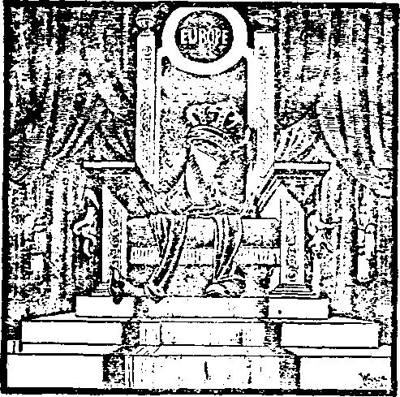

4iHii.ii riTOaiAetii
Oct. 1!, 192X Vol. IV, No. SO
fuljli^Jicd cirery otter
I ’ •• j week tit ;.x Concord Street, \^/r Brooklyn, A*. y„ V, S. X
Five C«nt« 4 Copy—£1.00 a Y«ai
CafiAda ud Foreign Coiuiiria^
Vol. 4 WEDNESDAY, OCTOBER 11, 1922 No. St
CONTENTS of the GOLDEN AGE
LABOR AND ECONOMICS
The Mammon of Undghtaoaaneaa - - _ _ m
SOCIAL AND EDUCATIONAL
Graft an Tnereasing Menace 10 Graft and Cwt of Living 11
POLITICAL—DOMESTIC AND FOREIGN
Beyond the Indue (Part II) 3
India and the World War 4 Official* too Reactionary ...-S
HOME AND HEALTH
Hertiiag in rhe- Early Ageo 14
God’s Merkod of Hygiene — 15
DeuiOuUcic Additions ..._____13
TaiiuudUt Sorcery .1G
Nut all Disease from
Demon* _____________—___,..IT
n<?iilir.£ under the Apostate
Slow Fr-fcres* ...________,_...13
Much Light i-hk’t 1574 -....20
RELIGION AND PHILOSOPHY
Besulutaon Adopted by I. B. S. A.
Mildotis Now Living Will Never Dio —
••Lik* li.itn ii"-i tiie .......
The Philosophy of Resii-wtiuQ (Port 1) ——2"
Meauing of ne.’tiritloD ....27 \ t>e Citation of Adsim
Tree of KnowleJge of
Fai.ie Xh«ritH Cuiifutsd ... 29
Th a Formation of Eve ..'....29 Knowledge of Adam and
Studies in tlie of
Prt>?J’bed ewr? other We^oerdir at 13 Carrvd Street. HmA.j'G. V ’.....V •' V
by- u-HiinvoitTH. nr;*;i>r8 aoi Mx-rtlN C’.A\nc; J. Wil..!f.VVKTH...... ». "-‘'f
Bt*RV!T r. UAKTIN .... F!ix.n-^ '4 *ti .ter WM. F HLTHJINGd V .'*! J-
Crpirifttri i id propdriflfi. Add?’?'-*; IS ’ Street. Ri^kSriJ. Y., . T < A.
Ftvw'Cents a (’urf — *!.''« \ VsrtR F«-»»*’cn nfi'irKS : I'rtf.
Terrace, Lancaster <:•'*►*, I. • tlV. 2' f 'Hrtddi?<n : 2?u [it.?:*; ••. S’. W„
T-'r-Hito, ; ■ .4 * r!t-'•?••- 5
St.. .'P»fh«ttrn<». . An^tmlix rfiviirtnP1"#** '!} •• n iu®
3J '• '’■tijdjx X L
abler Un Act of Karch 3. IB’®’
Volant* IV Brooklyn, N. Y., Wednesday, Oct. II, 1923 Number 8®
Beyond the Indus (Part n)
THE East India Company, founded under Queen Elizabeth in 1599, was the beginning of British trade in India. All the other politicians of the world are schoolboys as compared with British diplomats; and by playing one of India’s seven hundred governments against another, and by using one to overawe another, the whole country gradually came under the rule of the Company. In 1.858 the government was transferred from the East India Company to the British Empire. This was a change in title, but not a change in fact; for the government is still in the same hands, and is still administered in the same way as when the East India Company had undisputed control.
We have before explained that the government of India is really in the hands of the Viceroy or Governor-general, assisted by a council of six persons. Then there are sixteen other persons, appointed by the Governor-general, who may ask questions about what is done with the $600,000,000 which is raised every year, but who may not propose any resolutions. They are, so-to-speak, the Viceroy’s official patters-on-the-back.
In February, 1921, a new branch of government was opened, the legislative assembly, which has the power to pass laws, after they have been approved by the Viceroy and the British Parliament. This is a native body, the hoped-for nucleus of self-government for the country.
But India has not much to boast of in the way of self-government yet. For example, the right to sell liquor is a government monopoly, granted to certain individuals on special terms. This is the foundation for many of the great fortunes of t’m I’dtid) IsFs.
Now suppose some misguided enthusiast in India should start to preach against the liquor traffic. What would happen to him! We can answer this quite clearly; for it has already been tried. In the vicinity of Bombay some persons exhorted the natives to abstain from thje use of alcohol and narcotics. Straightway the government revenues fell off, the exhorters were arrested, riots ensued, and further preaching of the sort was put down by armed force. We wonder whether the missionaries in Bombay ever pray: Thy kingdom come; Thy will be done in Bombay even as it is done in heaven,’ and if so what they have in mind when they offer the prayer.
The seventy native governments of India which have survived adoption, first by the East India Company and second by the British Empire, continue to go through the ceremonies of government; but their rulers have little to do except to weai* brilliant uniforms and jewels to dazzle the eyes of their subjects, and to furnish subject matter for illustrated newspapers and magazines. e
The Rajah of Pudukota is on the throne that was ruled by his ancestors before Julius Ciesar crossed the Rubicon, but it is safe to say that no rajah of that country ever had as little real power. He is entitled to a naval salute of eleven guns and is considered a great man when he is in full regalia in London. While there he may even be invited to dine with the king at Buckingham Palace, but he would not be allowed to enter any English club in India; for in India the Hindus must be made to know who are their overlords. At least that seems to be the theory.
The Maharajah of Jhind traces his way back through a line of maharajahs that have been ruling the land of Jhind for almost a thousand years. Some of the maharajahs have a million or more subjects: seine of them have palaces that are famous throughout the world; some of them have jewels worth millions of dollars, handed down from their ancestors. But the jewels of many of these rulers have found their way to London, never to return.
As "money loves money” throughout the earth so “royalty loves royalty,” although most possessors of money and of royalty know, whether they admit it or not, that neither the facts back of the money nor those back of the royalty will bear investigation. The maharajahs are retained on their thrones because it is “good business’’ to have them there. The Prince of Wales is jealously guarded as the future Emperor of India for the same reason. When the city of Calcutta recently turned out to welcome the Prince it was thought expedient to lock up 5,209 persons in the one city before the unalloyed joy over his arrival could be guaranteed. During his visit outbreaks occurred in Bombay, Madras, and Chauri Chaura.
While the Prince was in India he had the novel entertainment of witnessing the annual pig-sticking event known as the Kadir Cup. The Indian boar is considered the bravest animal afoot; he stands usually over three feet high, weighs 200 pounds, and has razor-like tusks with which he can disembowel a horse or a man in an instant. When overtaken in a hunt the boar will turn upon his pursuers, and the horseman’s chance for the life of his horse or even of himself may depend upon his ability to receive the boar’s charge upon the point of his spear.
India and the World War
L'RIXG the war India sent to the front 1,250,000 men, $1,000,000,000 in money, all the expenses of the Indian contingents and millions of tons of food, fodder, army equipment and military stores. The proposition made to the Hindus at the time was the same as was made in America; that the war was a war to end war and to make the world safe for democracy; that greater liberties and better living conditions would surely be their reward.
Returning from the front, where they had been well-fed, and coming home to want worse than they had ever known, and with the 66,000,000 Mohammedans displeased over the unhorsing of their spiritual ruler, the Sultan of Turkey, it followed inevitably that many of the ex-soldiers were dissatisfied, especially as the promised liberties were not promptly forthcoming.
Accordingly the Government enacted what is called the Rowlatt Sedition Act (against the unanimous advice of all the Indian members of the council), and as this act is unique in the history of jurisprudence and of liberty, we give herewith a summary of its provisions, which have been widely published. Let it speak for itself; and when you read it try to put yourself in the place of a Hindu soldier who fought in France to preserve the life and the official position of the man that drafted the law;
1. Any Indian is subject to arrest without warrant and is subject to unlimited detention without trial.
2. The burden of proof rests upon the accused.
3. Trial by jury is denied. Right of appeal is denied. "No order under this Act shall be called into question in any court and no suit or other legal proceeding shall be against any person for anything which is in good faith done, or intended to be done under this Act.”
4. The accused may be convicted of an offense with which he is not charged.
5. ( The prosecution "shall not be bound to observe the rules of the law of etide nee." In other words, the testimony of dead, absent and non-existent “witnesses” can be used against a suspect.
6. The accused is denied the right of employing a lawyer or producing witnesses.
7. The authorities are empowered to use “any and every means” in carrying out the law and obtaining confessions.
8. The accused is given a secret trial The ninh.d of the procedure and the findings of the trial mar n- t be made public.
9. The accused is kept ignorant of the names of and is not confronted with his accusers.
10. Any per.-on (>tca his or her own family) vcLc-tarily associating with an ex-political prisoner mu- '• e arrested and imprisoned.
11. Any place or home can be smirched "ith’i;: ■ rant.
Since the war India has been eager to get r. i of her military burdens, ami attention 1ms lu- a riveted upon the military expenditures , m.m more than before. In South Africa, which m a peninsula, eight percent of the government r-v-enues go to the army; in Italy, which is ids-i a peninsula, fourteen percent so to the ;irmy; In India, three years after the war, tifty-two percent go to the army, and the total taxes of all kinds are fifty percent greater than they were before the war.
The excuses which are made for this large army expense are not convincing. The commander-in-chief says that the large force is needed to defend the northwestern frontier against the frontier tribesmen. But the London Times says: “The menace from the frontier tribesmen only becomes acute when we pene-
trate into their territory.” And the Hindus themselves say that the real reason for the
- large army is to overawe the Hindus and prevent them from getting the things they were promised at the time of the World War.
Lord Northcliffe, who recently made a visit to India, said that there has been a marked change of demeanor and acts toward the whites by both the Hindus and the Mohammedans, especially on the part of those who were formerly most friendly.
The New York Times, of June 18th, 1922, goes into the subject of how the estrangement of the Hindus took place. The report is over the signature of E. H. Dickerson, a mining engineer, just back from five years in India. As ’a rule this kind of testimony is reliable. Mr.
i Dickerson said:
'•'There is in India a class of Englishmen occupying - usually high administrative posts who belong to au age which they tail to realize has passed away. The Indian army otllcer is almost invariably of this class. He belongs mentally in those ‘kiek-the-nigger days' which existed before the idea of the rights of minor peoples had been brought forth. The men in power during the war in the Punjab, the district in which most of the Indian overseas troops were recruited, were pre-eminently of this class. ...
“I was present in the State of Mayurbhanj during the uprisings among the Santals, which took place in 1916. After seeing the effect there of overzealous re-• cruiting methods among a primitive and ignorant people, I am inclined to accept the Indian version as correct. [Ue here referred to the unrest in the Punjab • accompanied by riots. The Government attributed the unrest to the gem.ral depravity of the Panjabi, his hatred of British ride, etc.]
‘‘As a r<-u’.t of this state of aifairs General Dyer, who ’-as m command of the British troops in Amritsar, can-cd notices to be put up forbidding all public assemblies. A few hours after the posting of the.-e notices • a large crowd of Indians assembled in the Julianwalla Bagh. one of the public squares of the city. It is doubtful if in a population so illiterate the notices were thoroughly understood, or if in the short time since their ’ issue their significance had been generally realized. It
’ is also doubtful if any copies of the notice were posted
in this particular spot where the meeting took place. The crowd was apparently a peaceful one and if armed at all carried only sticks.
“Carried away by the fear of a general uprising, General Dyer closed the outlets to the square with his troops, opened fire with machine guns and did not cease until 380 persons had been killed. This was followed by the bombing of outlying villages from airplanes and the enforcement of degrading indignities upon the public. Indians were permitted, for example, to pass certain streets only on their hands and kneea.”
In The Golden Age, Number 15, for April 14, 1920, we discussed the Amritsar incident at some length. The shooting was not done with machine guns, as stated by Mr. Dickerson. General Dyer stated that the door to the place where the lecture was being held was too small to admit them or he would have used them. As it was he had to be content with shooting 1^650 rounds of ordinary ammunition. On the witness stand afterward he admitted that martial [law had nut been extended to the suburb where- the shooting occurred, and that he had done nothing afterward for the relief of the 3,600 who were injured. He also admitted that the crowd was unarmed and might have dispersed peaceably if he had ordered it to do so. He was complimented by his commanding officer, awarded a pension of £900 per year and presented with a testimonial of £30,000—something near $50 apiece for each man, woman and child slain by his orders.
Officials Too Reactionary
Ma. P. Tennyson Cole, writing to the New York Times, March 13,1922,seems to confirm the thoughts last expressed, that the recent trouble in governing India is due to mediaeval policies on the part of officials. He said: “After long residence and intimate knowledge of all classes of people in India, I may confidently assert that reforms of a social and economic order, directed toward a complete departure from the traditional methods of British Indian officialdom, would do more to pacify the native population than any measure looking toward secession from the British crown. It is the perpetual state of subjection in which the natives of all castes aVe held by the assumption of superiority of race, always evident, in the attitude and long established practices or the governing officials, that kindles ani-mo-ity and intensifies racial prejudice.”
The New York World gives some particulars, in its issue of June 3, 1922, taken from a speech of Pundit K. Satanam, showing this lack of kindness toward the Hindus by some .who, for the time, have them in their power:
“The brutal way in which wme of the volunteers of Rawalpindi were treated so late as the end of March, where they were first soundly beaten and then dragged by the legs with their shoulder and head trailing along the ground until the hair was rubbed off, recalls some of the horrors perpetrated by the police officials in martial law days in Amritsar for the purpose of extorting a confession from the hapless victims.
"What is worse still, the police seem to take a delight in offending the religious susceptibilities of the people they arrest; sometimes a Koran or a Bhagavad Gita is beaten with a shoe, sometimes a Sikh is pulled by his beard (as was brazenly admitted by a European police officer in the court of Mr. Keough the other day), and sometimes the Sikhs are tied together by the hair of the head.”
There has recently been a change in the Secretary of State for India. It is in the London office that the policy that is to be used in the government of India is formed. Of the retiring Secretary, Mr. Montagu, it is said that he has been long opposed to blood-and-iron methods of government. Of his successor, a Tory, it is said that he is uncompromising, high-minded, well-meaning, zealous, very able, and possessed of great wealth and a cantankerous disposition. It is said of him that unlike most public men, instead of attempting to solve difficulties by means of quiet discussion, he prefers to go with hammer and tongs for those who are opposed to him. What he will do for India remains to be seen. The description that is given of him does not sound any too encouraging.
TxlE punishments which have been visited on political offenders in India during and since the war have been very severe. In one province in the Punjab alone, 596 people were tried by court martial within the past few years, many of them lawyers, editors and other prominent Indians. Seventy-three of them were sentenced to death, 204 to rigorous imprisonment, and 147 to the Andaman Islands for life.
The treatment accorded to prisoners in India is about the same as in Rhode Island, Florida, Persia, and other semi-civilized communities. The Indian Jails Committee has recently published a report describing the cages with their trapdoors in the floors in lieu of toilets, their sleeping-boards in lieu of even the plainest beds, and has acknowledged that the Rhode Island method of ‘'standing handcuffs,” wherein the prisoner's wrists are handcuffed to a staple or to a bar of his cell door, is liable to cause serious results. The report says: ‘‘The long period of enforced standing may be injurious, because of the possible danger of having an epileptic fit while thus handcuffed to the wall.”
In the transportation of prisoners recourse is had to the Florida system of the bell-chain, wherein at night all the prisoners are fastened together to a bell-chain which is itself attached to a staple fastened in the wall or ground. The committee denounces the Florida system as barbarous and recommends that it be prohibited except as a strictly temporary measure; which means that the jailers will use it whenever they feel like it. The report says:
"The use of the bell-chain makes it very inconvenient for a prisoner to answer the calls of nature while thus fastened, by a chain, which also secures the whole row of men in the same barrack, while obviously all considerations of decency are impossible under such conditions. We were told that, on the occasion of an epidemic, such as the recent outbreak of influenza, the evils of the bell-chain were particularly noticeable. If a man fell ill at night, it was impossible to remove him without unchaining the whole row dr barrack; and cases occurred where dead men were found alongside the living.” .
The conditions in the Andaman Islands are worse than on the mainland. The Islands are fever-smitten and the death rate is very high. There are no schools or religious teachers or resident officers on the Islands; merely a group of overseers whose duty it is to see that the required amount of labor is performed.
It will be remeq^ered that 147 prominent Hindus from one province were sent to the Andaipan Islands for life. These men were men of high character, whose dr fine was that they were patriots, lovers of their fellowmen, longing for and working for a better government. The conditions into which these men of high character are plunged in the Andaman Islands is revealed in the following excerpt from the Indian Jails Committee's report:
“He was then released into a community in wh:<--h there was not more than one woman to six men. and in which all the restraints- supplied by the ca>te sy.-tem were absent. He was left without any moral guidance, and without any of the domestic and family influences which to a large part of mankind supply some of the chief inducements to respectable conduct. The public opinion round him was thoroughly corrupt, and if by this time he retained any desire to live a moral life he received no assistance from the system of society in which he found himself. It was hardly to be exp-cted that a population so trained and recruited could lie tit for successful colonizution.”
“Like the men, the women members of the colony are convicts. Marriages, known as local marriages, are allowed between the self-supporters of the two sexes. In the year 1918, there were only 233 female self-supporters as compared with 1,304 male self-supporters. ... As might have been expected, the result of such a disproportion of the sexea has been wholesale immorality on the part of the women.”
All are aware that it is necessary to send missionaries to India, but not all appreciate fully why they are needed. It is necessary to have them so that they can assist the Christian officials of that land to treat the natives in a Christlike manner. But the Manchester Guardian seems to intimate that they were a little short of missionaries recently when some prisoners were being Idaded into box-cars to be taken to the nearest jail. The Guardian feels sure that there will be an investigation of the matter. It may result, as in the case of General Dyer, in a letter of commendation, a pension and the gift of a large fortune for the one who did the loading. The report proceeds:
“The Government of Madras states that an investigation is being held into a deplorable ‘occurrence in which sixty-four Moplah prisoners lost their lives? From such derails as are available it would seem that they were crowded into one or more closed railway vans and died from suffocation. It is clear, at any rate, that a party of a hundred rebels taken in the difficult fighting in the Malabar area were entrained last Saturday at our base, Tirur, for the nearest available gaol, at Bellany, and that when the train stopped at midnight after an eighty mile journey, fifty-six were found to be dead. Another eight have died since. A full investigation is promised How came it that in the security of an unmenaeed base the transport of prisoners or anyone else could be so fatally mismanaged? Were the prisoners without any sort of guard who could note their, plight ‘and .have it remedied? These questions investigation will no doubt answer, and the guilty will be punished. But however rightly we act after the harm ia done, our reputation for wise and decent executive work in India is again imperiled at a moment when it needs all the strength it can get. The Moplah rebels had lost the sympathy even of these Nationalist leaders whose teaching had helped to inspire their crazy outbreak, but of course this suffocation disaster will be used to make martyrs of the dead prisoners throughout all India.”
A British official document shows that the practice of giving prisoners the third degree prevails in heathen India, the same as it does in Christian America. Instances are on record in the United States where prisoners have been tortured into insanity and into suicide by anarchists who were on the government payrolls and who were supposed to be government officials. But we never heard of anything quite so bad in America as the following account taken from a British official resolution:
“A woman named Gulab Bano waa convicted early - in 1908 [six years before the World War began] upon her own confession of poisoning her husband, and sentenced to be hanged. She appealed to the chief court and the story of the case came out. On the evening of June 7 she complained to the matron of the jail that the police had maltreated her. The hospital attendant' was summoned and to him Gulab Bano made a statement to the following effect: ‘I was hung to the roof by the police in my village during the investigation, with a rope in my legs and a baton smeared with green chillies was thrust [into her viscera]/ The civil surgeon after examination reported that he found her ‘terribly inflamed and ulcerated, a condition which, in my opinion, could have been caused only by an assault similar to that described by the prisoner/ The chief court acquitted the woman, but she died of fever. And the executive branch of the British administration, the Lieutenant-Governor of the Punjab himself, exonerated the police by high-handed methods.”
The Mahatma Gandhi Episode
STUNG by the Dyer massacre at Amritsar and other cases of cruelty, some of which we have mentioned, a lawyer named Gandhi in the fall of 1920. inaugurated a movement for home rule in India which has caused and is still causing the British administration great concern.
Mahatma Gandhi was born in Gujarat province,. Bombay, 53 years ago, was educated for the legal profession in London and settled in Johannesburg, South Africa, where within a few years he acquired a legal practice bringing him in $15,000 a year. His earnings, as fast as made, were devoted to charitable work among the Hindus who form a large part of the population of that part of South Africa. For championing the cause of the Hindus in South Africa he was jailed three times.
In the fall of 1920 he issued an open letter addressed “to every Englishman in India” in which he pointed out that for twenty-nine years he had cooperated with the British government in every way in his power, having imperiled his life on four occasions in various military campaigns, but that the Amritsar massacre and the reward of its author had been too much for him. He reviewed Britain's appropriation of India’s means of livelihood, the excessive military expenditures, the expensive civil service, the disarming of the natives, the traffic in liquors and opium, the repressive legislation, the degrading treatment of the natives and the oft-repeated injustices; and he urged reforms, a better Viceroy and a greater effort at doing as they would be done by. He then, on behalf of-his fellow countrymen and in the effort to bring about a restoration of Indian rights, advocated the following program and had it approved by a vast congress of the Indian people:
1. Boycott of government titles and honorary offices;
2. Boycott of government functions, such as levees and durbars;
3. Gradual boycott of educational institutions controlled wholly or in part by the Government, and opening of national institutions instead;
4. Gradual boycott of law courts by lawyers and litigants and institution of private arbitration courts;
5. Boycott of legislative councils by both candidates and the electorate ; .
6. Boycott of recruiting of clerks, soldiers, etc., for service in Mesopotamia;
7. Boycott of foreign goods;
8. Promotion of home industry.
At length, though having done not one thing of a revolutionary character, he was arrested and, on March 12, 1922, was sentenced to six years’ imprisonment on the charge of sedition. He now sleeps on a board, is allowed no papers, is always forced to stand in the presence of the jailer (though scarcely able to stand at all) and is allowed only one visitor every three months. One of these visitors says of this man who is bearing such treatment because of his love of his fellowmen:
“He turned up to me with a smile of welcome, the typical head of the idealist; the skull well formed and finely modelled; the face narrowing to the pointed chin. His eyes are deep, kindly, and entirely sane; his hair is greying a little over the forehead. He speaks gently and well, and in his voice is a note of detachment which lends uncanny force to the strange doctrines that he has given up his life to teach. One could not imagine him ruffled, hasty, or resentful. Not the least part of the moral supremacy in his crusade is his universally-known willingness to turn the other cheek to the smiter. From the first it must be realized that consciously his teaching has been influenced by that of Christ, for whom his admiration has long been the almost dominating feature of his spiritual life; and probably the external character of his daily activity has been modelled also upon Him.”
It is not unlikely that this locking up of Gandhi may do more for the Hindu people than his liberty would have done. It is such things that make people think, and thought is a precursor to action. The Young India Association of New York claims that in India there are now 200,000,000 people that are with Gandhi heart and soul. They point out that the India of today is not the India of a century ago: and that although there are only 16.000,000 of the population that can read and write, yet many of these 16.000,000 are men of intelligence, liberal education and wide influence among the Hindu people. It is their hope, and it is our steadfast belief: that the darkest day of India’s dark history is past. They* look for a better government; we know that the government of the Perfect One over ail the earth is now but a matter of relatively few months. Come, Lord Jesus!
The Poverty of India
FAR down below all the political unrest in
India, at the present time, there are in evidence a great social unrest and a vast economic upheaval, which are being caused by the awakening of the poor in India to the sense of their own perpetual misery and age-long oppression. It is very difficult indeed to fathom the poverty of India; and only those who go in and out among the village people daily, and who live their own lives close to the lives of the poor, can understand what their poverty means and from what overwhelming wants and difficulties they suffer.
The present political movement differs in this respect from all others that went before it—it has reached the masses. These masses in India
By C. F. Andrews (India)
understand very little regarding the Khalifat question (the restoration of the temporal power of the Sultan of Turkey, “spiritual” head of the Mohammedan faith),,even when they are Musselmans. They also have a very vague idea of what Swaraj (self-government) means, and what it really implies. But the chosen leader of the present movement. Mr. Gandhi, has deliberately taken poverty for his own lot in life. He is a poor man. today, one of the poorest of the poor. He has lived, for his whole manhood and middle age (since he was a y’oung barrister in Johannesburg and gave up his practice), as a poor man among the poor; possessing nothing in the world and going about in a peasant’s dress, eating a peasant’s food, and walking everywhere barefooted as a peasant does, traveling in railway trains in the third class compartments, just as the villagers travel, sharing all the discomforts and miseries of the peasant classes, both in South Africa and in India itself.
In South Africa, I have lived with him, among the Tamil indentured laborers (who had been brought out originally to work on the sugar plantations) when they were engaged in the Passive Resistance struggle. I have seen the supreme self-denial of his daily life. What wonder, then, that the villagers of India should have awakened from their dull, poverty-stricken. joyless routine of daily toil into a fresh atmosphere of new hopes and new aims and new desires, when one, whom they call in reverence “Mahatma Ganvlhi,” came among them, and when for the first time a leader, who lived among them as one of themselves and was prepared to die for them, came to rescue them?
The awakening has taken different forms. The first has been that of a revolt against the oppressive and illegal exactions of the landlords. In India, these oppressions and exactions have been going on for centuries. They include “forced labor” of every description. Now on all sides we see economic movements springing up among the peasants, in which they band themselves together and reject these fore-ed exactions and these tyrannies of the landlords.
• Second, the political movement itself has taken into its own program the removal of all “untouchability." There are more than fifty millions in India who are still outside the pale of society altogether, and who are called "untouchables.” These are now being accepted into society; and the change, if it comes about, will mean nothing less than a great social revolution. A parallel change in the Occident would be that of the acceptance of the Negroes into white society in America.
Third, among the poor of India, in recent years, the government-fostered drink and drug habits have been increasing with great rapidity. Therefore there lias been, in close connection with the political ferment, an almost desperate attempt to stop the ravages of drink and opium and to make the life among the poor in India “dry.”
Last of all, the increasing poverty of the villagers of India is said by the leaders of the political movement (and there is much to justify their assertion) to be due to the fact that, while in India in days gone by, the village community was self-supporting, supplying itself not only with Tood, but also with cotton cloth, which was hand-spun and hand-woven, now in these modern days the village life can be selfsupporting no longer. Cheap Manchester cotton goods have destroyed spinning and weaving industries in the villages, and thus have left to the villagers only one leg to stand on instead of two legs, one lung to breathe with instead of two lungs. For Indian village life is peculiar in this respect, that the long dry season year by year, during at least six months, before the monsoon comes, is a time when agricultural operations are at-a partial standstill. A very great amount of time is wasted by the villagers, if they have no subsidiary industry with which to occupy themselves. In the olden days the villagers would be occupied all the year round; for, when they were not out in the fields they were engaged at the loom. The new political movement which Mr. Gandhi has inaugurated, aims at bringing back to the villagers these home industries of spinning and weaving.
It is the same problem which Lady Aberdeen and otliers successfully solved for the Highlanders of Scotland and for the islands off the Scottish coast, where the villagers were idle during the long winter nights, and were too floor to exist by agriculture alone. The famous homespun Scotch tweeds which they now spin have prevented many Scotch peasants from being forced by hunger to emigrate. Mr. Gandhi hopes that the introduction of homespun cloth once more into popular taste, throughout the length and breadth of India, will bring back prosperity to the villages. He is insisting that educated and uneducated alike should take to homespun dress, and thus should supply funds directly to the villages instead of merely sending money out of the country to Manchester.
It may be asked: What success has the new movement attained? The answer is that in certain directions the success has been phenomenal. It may be safely said that the poor in Indi.n have awakened in a manner that has been quite inconceivable before. “Untouchability-’ has received a shock, although its stronghold is not yet taken. The drink and drug traffic has been set back in a remarkable manner, as the Government drink and drug revenues dis-dose. The import of Manchester cotton goods last year fell to about one-half its usual amount; and though tliis may be partly accounted for by bad trade, yet this new movement in favor of home industries has also had its salutary effect.
At the present time, in the North of India, we are faced with what may, in the end, result in a “peasants’ revolt.” For, in spite ot‘ the most earnest preaching and practice of nonviolence on the part of Mr. Gandhi, already there have been outbreaks, which have ended in bloodshed. The landlords seem to have learned nothing; and a new tenancy act has only increased the peasant dissatisfaction throngh-out the country. This act was passed by the landlords in the new councils, in the teeth of liberal opposition.
Thus the signs are still dubious. On the one hand, in the awakening of the peasants we may witness with hope the dawn of a new age. On the other hand the evils lie so deep, and the oppressions of the past have been so firmly rooted, that a peasants’ revolt involving, bloodshed may still be feared, if the forces of enlightenment and freedom cannot gain their momentum with sufficient promptness and carry the landlord classes forward toward a peace- -ful economic revolution.
* Graft an Increasing
ONE of the greatest dangers to our “Christian” civilization is the constantly-increasing number of grafts and of grafters. It is dangerous, because insidious and far-reaching.
Most people look upon graft as connected with politics only; yet it reaches to every line of business and to every calling. Some years ago a business friend found himself in a quandary. A short time before he had made money on some work; and, as usual, he offered a percentage to the architect in charge. It was indignantly refused; and he was given to understand that the client always pays for an architect’s services. Aly friend found himself between the old and the new. There was work in the office of another architect, but he did not know which course to follow; for if he offered a percentage. it might be looked upon as an insult, and if he did not, there would be the chance of losing the work.
Another man, of the new style architects, for whom I recently worked, declared that he had to fee them all and to make many expensive changes and improvements in homes of architects, for which he never presented a bill. One piece of work, with which I was connected, called for goods from a particular jobbing house; and the architect would permit no substitution. The goods could have been bought directly from the manufacturer for twenty-five percent less; and that amount had to be added to the price of the work in order that the man in charge might get his profit. The added cost which the architect got also increased the usual
Menace By John Buckley
percentage, both of which the client had to pay. In another job on a Western college, the contractor, at the request of the man in charge, added a sum of money to the estimate; and it was agreed that the cash was to be paid to the architect. It is needless to state that both parties to the agreement were crooked.
Ask any traveling salesmen in any line of business; and they will tell you that it is a part of their business to know whom they must fee, ’ and to whom it would be unsafe to offer the percentage of graft which is being looked upon as necessary as tipping.
From the State of Georgia, several years ago, a wealthy farmer sent produce to commission houses in New York and Philadelphia. He was not satisfied'with some of the returns from New York, and after a shipment he took the train north. On arriving in the city, he went to the commission house, where he was unknown, saw his goods put up for sale, and bought them, receiving a bill of sale. He then went to his home in the South, and waited returns, which, when made by the merchant, were but half of what he had paid them. A young man who was a bookkeeper in a commission firm in this city told me that the firm that he worked for followed this form of grafting regularly.
In the city where I live, the city ordinances set the price of a sidewalk gasoline station permit at one dollar; yet a friend was forced to pay $400 for such a privilege.
The laws say that a building permit shall
cost two dollars, and that was the price before the war. Today, the price is multiplied many times. Repairs of any kind require a permit, and the price is optional with the building com-- missioner, which gives a wonderful opportunity for graft.
Option money in a large sum is placed on a land sale. The prospective purchaser says that he will build a large and expensive apartment house, if he does not have to pay too much graft. In a time when we need both housing and work, the deal may fail on account of graft.
At present, the mayor receives a salary of about the wages of his chauffeur. He spends thousands to secure the election, and is able to pay his bills. Business men about town know that, during certain administrations supplies must be bought from friends of the official. Every line of business has its graft for which the public as consuiners must pay.
Every graft, whether it be in housing, transportation, or industry, increases the cost, and whether you know it or not, you must pay your share. The workman who loafs on his job is as much a grafter as any other. He increases costs, that he may gratify a lazy inclination. The increase of cost is augmented at each handling; it is taxed at its estimated or its cost value, and the tax added to the price. Most people do not pretend to be better than their neighbors, and what usage tells them is right and proper is for them the standard that will govern their actions.
The first principle of business is to buy low and sell at a profit; and whether it be in land, produce, cattle, or a manufactured article, we feel elated when we make a good trade; and the more we make on the transaction, the better we feel about it. Who is there among us who when offered a good chance will say: “No; it is worth more. I will give you double.” Such an action would indicate to most people mental incapacity, and they would think that the party should be in an asylum.
GRAFT ANO COST OF LIVING
On every hand we find graft adding to the cost of our living. Excess war profits, which the Government is trying to recover, the people have paid for, and must continue to pay. Price-boosting is put on every human need and has created a desperate condition for millions.
To the toiling thousands, for whom there is no graft, there appears to be little merit in honesty. “Honesty may be the best poHcy”; but the reward seems a long way off — and the grafter does not have to wait until after death. Graft, public and private, will kill any improvement of method that may be proposed in the administration of affairs; and we shall continue to grope for prosperity, which to most of us is always just around the comer.
The initiative and referendum we cannot get. The grafters do not want it. Government ownership or control existing graft will kill; and the sham battles of tariff and reform will continue to be fought, under the leadership of the controlling politicians. Meanwhile graft undermines our natural honesty and destroys belief in an all-wise Providence. Men say that no one but priests and rulers of old ever saw God; and when driven to the wall, men have— and men will—take a chance and forget that there is to be a future. We must either kill graft and substitute, improved methods, or it will kill us. But to change the methods and customs that it has taken centuries to formulate will require a desperate remedy; and the remedy is on the way.
We are told that in order to save ourselves we must support the impoverished nations of Europe, and we have also learned that there is- no form of waste in the world that we shall not eventually have to pay for. We are paying, and will continue to pay, for the ravages of that war in increased taxes—which means increased cost of living and rentals, and loss by unemployment and hard times. A chart in the Literary Digest, compiled by experts, shows that the only part of the country which is blessed with good times, is the fashionable coast section, in the neighborhood of Los Angeles. The solution of our difficulties we are told hy business men, is to lessen the cost of labor, that we may compete with the lower-priced European labor. In other words, we must give up our American ideals, and adopt a European standard of living. Let the American mechanic, who is forced to pay from $35 to $50.for housing, tell us how it can be done in a time of housing shortage when each month brings a dread that the rent will be raised.
A key to an important one of our difficulties was struck by Woodrow Wilson before he became president. He declared his intention <o abolish the Lobby. He learned Inter that the Lobby was greater than any president, and that the money power that it represented was too well entrenched to be attacked. Andrew Jackson defeated the State Banks, but it was at a time when the money interests were not so well organized as at present. Chief Justice Brewer said many years ago that “the Chicago Stock Exehsnge had wrecked more lives, caused more suicides, and ruined mere homes, than the Civil War.” The Lobby represents the greatest money interests of the country, and other countries, and no president or politician dare attack or oppose it. It influences or makes our laws, and there is no force in the country to oppose it. The time will come when the people will be ’ forced t<> take the matter in hand, but it is not yet, and o.dy desperation will lead them to take the issue.
The Mammon of Unrighteousness Bj e. w. French
I HAVE been reading the Golden Age for two years and have accepted everything • that has been printed in it except the article written by John Buckley on “Who Gets the Money?” Samuel Gompers says that we should do something to prevent unemployment. The question is: How are we going to do it under a money system? Neither Samuel Gompers, John Buckley nor any one else can do any tiling to prevent unemployment so long as we have money as a medium of exchange.
Money causes greed, murder, prisons, asylums, misery, broken hearts, and death. It it strange to me, that as wise and progressive as the people think they are, they do not find out that they would be a million times better off without money than with it. Money calls for lawyers, judges, politicians, real esta'te men, landlords, oilice employers, bankers, insurance agents and companies, policemen, militia, soldiers, tear and trouble in general.
Why under the sun does not some one that has leadership or a press advocate a moneyless world, and do away with all tliis terrible crime and misery that is imposed upon the people? Why does not some one back Edward Bellamy's book, “Looking Backward,” and put it oat to the people, in the libraries and schools, and in magazines like the Golden Age, and educate the people up to such a system, showing them what it is and how much better off we would all be under such a system as Mr. Bellamy explainer!?
I can safely say that as long as the people have money as a medium of exchange, the old world will never progress. It will go down and down, and the people will he crushed in the mad stampede for that terrible thing, money. I do not think that as long as we have a money system Christ himself would like to come back to such a miserable, degenerated class of nobodies as we are. The Golden Age talks about millions now living will never die, but the people will first need to be relieved from the grievous burdens that crush them.
I believe in the prophecies of the Bible, but if the prophecy just mentioned is carried out we must make a big change in our system and do it quickly; for we are in the time of trouble.
We had a conference of our smartest, brainiest men in Washington, trying to straighten out the conditions of the United States and of the rest of the world; and where have they got ’ to? What have they accomplished? What can they expect to accomplish under a money system? *
• The more people that come on the earth the harder the problem of a money system is to solve. What a blessing it would be if we were all “broke,” and had an industrial army in place of going around begging for a job and starving and depriving our little babies of the necessities of life.
Just think! Actually millions of people are now begging for a job; whereas we should all be compelled to do our part towards providing for the world's needs. 1 do not care about myself so much, for I am a man; but I do pity the poor, unfortunate working girl or woman.
It makes me ashamed of the human race to think that we would elect to the head of our government men who in turn never get any tiling done for the good of humanity, but just enact a jumble of laws and more laws, and finally bring about another war to kill off some more of the young men and make many more orphans and widows and millionaires.
Here’s to the Golden Age; and may it ever progress. I wish there were a million more magazines just like it.
Healing in All Ages
IX THE greatly increased light now shining on all subjects many have seen the fallacy of drug medication and have gained some knowledge of a better way of treating disease. We are now convinced that the giving of drugs is a part of the old order of things under the rulership of his satanic majesty, Prince Lucifer; and feel it our duty to denounce the practice. And this is as it should be. Every lover of truth and righteousness is in duty bound to expose error and to oppq^e evil and unrighteousness; but in so doing he should be careful to attack error and not the individual who is still holding to it.
It is perfectly proper, and in line with our duty, to condemn the methods of healing in vogue during the administration of Satan, and to point to the better way now due to be known. But we violate the spirit of charity and of a sound mind if we condemn the medical man himself for giving drugs. The majority of them do the best they can with the amount of “light” in their possession, and are as honest with their patients as their patients 'nil permit them to be. They have done much, and continue to do much, to still the fears and soothe the pains of a suffering humanity as yet very incapable of appreciating any better method of healing.
It was not so long ago that we were also firm believers in the magic of drugs, and we did not acquire our present knowledge of a better way in an instant or because we were criticized and condemned for not knowing better. The majority of physicians in all schools of healing are kind-hearted and self-sacrificing and give much of their time, money and knowledge without any hope of reward; and they must at all times contend with-humanity when it is at its worst.
DRUGS DO NOT CURE
The medical man knows that drugs do not cure disease. He is well aware of the fact that all cures are wrought by the latent vitality within the body of the patient; and he prescribes the drug to deaden the patient’s sensibility to pain, to stimulate some inactive organ, or to purge the body of some obstruction.
“It’s a very good rule in all things of life, When judging a friend or a brother,
Not to look at the question alone on one side, But always to turn to the other.
By J. W. Gilbert, V. L. D.
We are apt to be selfish in all of our views, In the jostling, headlong race,
And so, to be right, ere you censure a man, Just ‘put yourself in his place’.”
The giving of drugs is as much, if not more, the fault of the patient as of the physician. Our pains and aches are the result of transgressions of the laws of life, due to ignorance and the “lust of the flesh.” The majority of us are creatures of feeling rather than creatures of sense, being influenced by emotion rather than by the reasoning of a sound mind. In our search for happiness we follow the lines of least resistance and accept the mode of living customary with our family, friends and neighbors, or that part which appeals most to otir own senses.
Our way of living, of eating, drinking working, and playing gives us pleasure; and we have no desire to change it. We are loath to believe that it can be injurious to us, and we resent any intimation that it may be. When we become sick, and are in pain, we’ think only of relief from that pain and welcome the method that will relieve it most quickly, so that we may return to our old way of living. Very few of us have any real desire to change our mode •of life, but all of us very much desire to escape the unpleasant results of that mode of limi.g.
Drugs relieve our pains by making us ummi-scious of them or by calling upon our vital reserves to rid the body of the poisons have laid us low. For this reagon all of us h;r'» been, and many still are, believers in the ma_:e of drugs, worshipers of roots, barks and her! -, continually seeking absolution for dietetic sins by the purchase of drug-store indulgences, and always more willing to take a mysterious “something” from a box or bottle than we are to mend our ways.
Very early in his-experience the doctor learns this trait of humanity; and soon he comes to the conclusion that he can accomplish more good by humoring his patients than by antagonizing them, even though he sometimes deceives them by administering harmless breadpills or colored water instead of the “powerful” medicine they feel that their particular case demands. The real point of attack, then, by those who are already enlightened, should be the ignorance of the patient
is
The modern medical man is already in possession of much of the light now shining on health subjects and is giving less drug medication than ever before, and many of them have given it up altogether and have taken their stand with the reformers. When the general public becomes sufficiently enlightened on the subject, all medical men wall be compelled to do likewise.
As evidence that the medical men themselves are aware of the shortcomings of their profession, we present the following opinions of a number of leading physicians:
■- WHAT THE DOCTORS SAY ABOUT DRUGS
“How rarely do our medicines do good! How often do they make our patients really worse."—Dr. Ramage, F.R.C. “Nine times out of ten our miscalled remedies are absolutely injurious to the patient.”—Prof. Jamei-son, of Edinburgh. “The effects of our medicine upon the human- system are in the highest degree uncertain.” —John Mason Good, M.D.,F.R.S. “All our curative agents are poisons, and as a consequence every dose diminishes the patient’s vitality.”—Prof. Meigs. Jefferson Medical College, Philadelphia, Pa. “In most cases our patients would be safer without a physician than with one.”—Prof. A. Clark, New York city. “The administration of powerful medicines is the most fruitful cause of derangement of the digestion.”—Dr. Coggswell, Boston, Mass. “We have done but little more than multiply diseases and increase their fatality.” —Dr. Benjamin Rush, Philadelphia, Pa. “Every dose of medicine is a blind experiment upon the vitality of the patieut.”—Dr. Bostwick, author of “The History of Medicine.” “The older physicians grow, the more skeptical do they become of the virtues of medicine.”— Prof. Stevens of the New York College of Physicians. “All medicines wlTich enter the circulation poison the blood in the same manner as do the poisons that produce the disease.”—Prof. J. M. Smith, M.D. “Medicine is a collection of uncertain prescriptions, the remit of which taken collectively is far more fatal than useful to mankind. Water, air and cleanliness are the chief articles in my pharmacopia.”—Dr. Covissart, Paris, France. “I charge that whereas the first duty of a physician is to instruct the people in the laws of health, and thus prevent disease, the tendency has ever been toward a conspiracy of mystery, humbug and silence. I urge that they have encouraged superstition and humbug by the germ theory of disease. I do not question the existence of micro-organisms; but they are the result, not the cause of disease. They are scavengers; their legitimate work is to clean out the sewers of our bodies, wherever there is decay, pus, or decomposing matter; these little life-savers are doing their work of neutralization, sanitation, purification; they feed upon eifete and decaying animal matter; they are beneficial helpers to an important end.”— Alexander M. Ross, M. D., F. S. L., of England./‘I have practised medicine in this city for thirty years, and I state to you that I have no confidence in it No man can tell when he gives a drug whether it will bring relief to the sufferer or hasten his death.”—Dr. R. M. Davis, Chicago, HL
Doctor Osler, Regius Professor of Medicine at Oxford University, England, considered the highest of all medical authorities, tells us why the doctor prescribes drugs. In an article on medicine written for the “Encyclopedia Americana,” he makes the following statement: “The psychical method haAalways played an important, though largely unrecognized, part in therapeutics. It is from faith, which buoys up the spirits, sets the blood flowing more freely and the nerves playing their part without disturbance that a large part of all cure arises. Despondency, or lack of faith, will often swing the stoutest constitution almost to death’s door; faith will enable a spoonful of water or a bread pill to do almost miracles of healing when the best medicines have been given in despair. The basis of the entire profession of medicine is faith in the doctor, his drugs and methods.”
HEALING IN THE, EARLY AGES
The history of medicine begins, not with Hippocrates, so often called the “father of medicine,” but jnst a little way outside the Garden- of Eden. Fear, sorrow, pain, disease, and death began when perfect man was driven from his perfect home and deprived of access to the trees of life. Within that Garden home there was in its perfection every food required for the perfect sustenance of humankind. In the “cursed,” uncultivated earth outside there were only undeveloped foods—fruits that consisted of a stony heart or seed kernel surrounded with sour and bitter woody pulp and a thick skin (like the nuts of our day, which may well be Edenic fruits from which the “curse” has not yet been lifted; the peach is an example of what can be done along this line by proper cultivation) —the farinaceous seeds of grasses and the herbs of the field. Everywhere were those thorns and thistles that were to so increase man’s labor. Overworked and undernourished. man’s health must fail; and weakness, disease and dearth become his portion, and that of his descendants.
The practice of sorcery and the dividing of roots survived the Noachian deluge and became essential elements in the religions of all nations not specially instructed by .Jehovah. This came about very naturally. Before the deluge that canopy of “waters above the firmament” had hidden the heavenly constellations from man’s view; after the deluge they became for the first time visible from the earth. What more natural than for man to suppose these were the “sons of heaven” who had taught his forefathers in antediluvian days, and to think of them as still influencing the destinies of the human race? Pagan religion, beginning thus in simple star and sun worship, later on developed into mythology.
With the ancient Chaldeans, as well as with later pagan peoples, it was thought that pain and disease were caused by some malign influence of the gods, as a manifestation of their displeasure, or by a demon who entered the body and maltreated the affected part. The remedies for disease naturally consisted of prayers and sacrifices to appease the wrath or gain the aid of the gods and incantations to exorcise the demons. One of the “spells” used by the Chaldeans was as follows:
“On the butter which is brought from a pure stall, The milk which is brought from a pure sheepcote. The pure butter of the pure stall, lay a spell; May the man, the son of his god, recover;
May the man be bright and pure as the butter, May he be white as this milk.”
This “spell” was one of the remedies of the “orthodox” system of medicine of the day, which was accepted by the inhabitants of the world of that time. The priests of that day were also the physicians, as were, in a later day, the magicians, witches, wizards, charmers and necromancers referred to in Holy Writ.
These ancient beliefs persist in various forms among the pagan inhabitants of the world in our own day, and in modified forms among the least advanced members of so-called Christian nations, who rub warts with stolen meat and carry horse-chestnuts to ward off rheumatism.
god’s method of hygiene
When Jehovah, after calling Abram from the land of the Chaldeans and his own people, established a nation that was to be under His speed supervision, He also established a “new” religion and a method of healing, which was rather a method of preventing disease by the observance of certain sanitary and dietetic laws revealed unto them through the great lawgiver Moses. By these laws they were to live and retain their health. And having thus provided for them, Jehovah forbade their engaging in any of the practices of those nations not under His care, saying to them in one of the laws He had given them, “There shall not be found among you any one that useth divination, or an observer of times, or an enchanter, or a witch, or a charmer, or a consulter with familiar spirits, or a wizard, or a necromancer. For all that do these things are an abomination unto the Lord.” (Deuteronomy 18: 10, 12) Through the prophet Isaiah Jehovah adds: “Should not a people seek unto their God?” —Isaiah 8:12.
This was, indeed, only reasonable. The pagans sought unto their own gods and had no faith in the.God of Israel. The Jew should have had equal faith in the supremacy of his God; and having been given the laws of life and health by the Creator of all life, he could have had no occasion to seek elsewhere for healing. But history proves that Israel was a continually rebellious nation. From their entrance into the land of promise until the final destruction of Jerusalem the magical rites of surrounding nations were secretly practised by Jews of high and low degree. In the course of*time these mystical philosophies, especially those of Chaldea and Babylonia, became so incorporated with Judaism as to form a part of the addition to the Law known as the Talmud.
DEMONISTIC ADDITION’S
The Talmud is an “explanation” of the Law, written by the Rabbis and accepted in place of the Law by the sect of the Pharisees. The magical formulae and art of spirit control are contained in that portion of the Talmud called the Cabala. The Cabala, it is said, contains the knowledge of the occult which Jehovah gave to Moses at the burning bush, from the pillar of fire, and on Sinai, and by which Moses was enabled to work wonders in Egypt. According to the Rabbis, this knowledge, w’hich was not for the common people, was handed down by word of mouth, through Joshua, the Elders, Judges and Kings, to the Prophets—who, of course, passed it on to the Cabalist Rabbin.
According to the Cabala, from which we get our word “cabalistic,” every word, letter, number, and accent of the Law contains a mystery ; and each of the Psalms, and certain other portions of the Hebrew Scriptures, are possessed of magical properties. According to the Cabala, headache and backache may be cured by anointing with olive oil, while repeating the Third Psalm, dangerous fevers by praying the Forty-ninth and Fiftieth Psalms, and the most severe eye troubles by repeating the Thirteenth Psalm while thinking the “powerful name Essiel.” Other Psalms give a man power over his enemies, enable him to secure the love and esteem of his fellows, quickly sober him when he is intoxicated, bring him luck, enable him to readily escape from prison, drive out evil spirits, etc. The Ninety-first Psalm is a veritable cure-all when repeated seven times a day and “connecting with it in the mind the fiirure of the golden candlestick composed of the forty-one holy and important words and names of this Psalm.”
TALMUDIST SORCERY
While the Talmud, in general, professes to forbid sorcery and “heathen usages,” it established a system of its own that was an excellent imitation and satisfactory substitute. While forbidding the use of the egg of a grasshopper suspended in the ear to cure earache, it recommends the following charm for boils and abscesses: “Bas, Basi, Mas, Masia, Kas, Kasia, Scharial and Amarlia, the angels who came out of the land of Sodom to heal painful boils. Let the color not become redder, let it not spread further, let the seed be absorbed in the bowels, ^.nd as a mule does not propagate his species, so may this evil be not propagated in the body of (name of sufferer) son of (name of father).”
One of the Talmudic writers declares: “To drink one-eighth ounce of ass’s milk which is forty days old, is effective against the sting of a wasp; one quart against the sting of a scorpion; one-half quart against sorcery.” Another writes: “A chief among witches told me if you meet witches you should utter the following: ‘Hot dirt, in perforated baskets, in your mouths, ye enchanting women. May your beads become bald; may the wind blow away your bread crumbs; may it scatter your spices; may the fresh saffron which ye have in your hands fly away.’ ”
According to the Talmud snake-bite may be cured as follows: “If a man be bitten by a snake, let him take seventy-nine hairs from the tail of a white she-ass, "free from the riise.isa Trefa, and he that is bitten sit upon them.” To cure “daily fever,” “take a new coin and a piece of salt of equal weight, and carry both over the pit of the heart, attached to a string.”
Abraham, Moses, Solomon and the Prophets were looked upon by the Cabalist as the chief magicians of their nation. A writer in the Talmud says: “God hung a precious stone around the neck of Abraham, and all that were sick and gazed thereon became well. But after Abraham died, God took the precious stone and hung it in the sphere of the sun.” Moses’ rod was looked upon as a magical wand by the aid of which, in conjunction with certain mystical spells that gave him command of the spirits of earth, air, fire and water, he was enabled to work the many wonders that he performed.
Concerning Solomon’s knowledge of magic we have the testimony of Josephus, who writes: “I was awe-ye-witness to a cure which the prophet Eleazer, in the presence of the Emperor Vespasian, performed upon a man possessed of demons. He made use of a root recommended by King Solomon as being effective against demoniacal disease, w hen the root was inserted into the nose of the patient, at the same time pronouncing the name of Solomon and the magical formula which this king taught.” According to Mohammed, Solomon was given the reputation of being a sorcerer by tho evil spirits' who sought to revenge themselves by concealing all kinds of magical books under his throne after his death. However the thought may have originated, history shows it to have boon held by a great number of the Jewish people in the days of our Lord. He, it would seem, laid the blame upon the scribes and Pharisees, whom He so severely rebuked upon many occasions.
I
THE "SOXS OF GOD”
Many learned people believe that the “sons of heaven” spoken of in the Book of Enoch were the “sons of God” referred to in Genesis 6:1,2 as ruling the earth in the days before the deluge and unlawfully, mating with the “daughters of men,” and that their semi-human offspring were the living originals of the earliest gods of ancient pagan religions. This thought harmonizes well with the mythologies. In every system of mythology the gods are spoken of as having at one time dwelt upon the earth, and in every system of mythology there is reference to a great deluge after which the gods are looked upon as residents of heaven, being identified with the heavenly constellations. The Emperors of China have always claimed to be descendants from the “celestial kings who ruled the earth foj eighteen thousand years” prior to the time it was first ruled by man. Therefore the Chinese Emperor has always been called “The Son of Heaven.”
We also find that every ancient people had a god of healing, who was said to have transmitted his power and knowledge to a human son who became the father of all physicians in that nation. Marduk, the Merodach of the Hebrew Scriptures, was the god of healing to the Chaldeans and Babylonians. In his stellar character, Marduk is the planet Jupiter. In Greek mythology Jupiter, Jove, or Zeus, was the god of recipes and the father of many gods. One of his sons. Apollo, was the Greek god of medicine. Apollo was a “son of heaven” who married one of the “daughters of men,” named Coronis. A son named rEsculapius, to whom Apollo taught the healing art, was the result of this union. In Hindu mythology this son is named Dhanwantra.
An Egyptian physician, calling himself ^iEsculapius, and claiming to be the son of Apollo and Coronis, came to Greece in the very early days. He is is represented as wearing a large beard and holding in his hand a knotty staff round which is entwined a serpent. He was worshiped particularly at Epidaurus, where a temple with a grove was dedicated to him. The sick person spent one or more nights in the sanctuary, after which the remedies to be used were revealed in a dream. Those who were cured offered a sacrifice to ^Esculapius, usually a cock.
Hygeia was the daughter of JEsculapius and was worshiped as the goddess of health. Diana, the Artemis of the Greeks and twin sister of Apollo, was appealed to by Roman women in childbirth; while Mercury, the Hermes of the Greeks and the son of Jupiter, was appealed to for the healing of skin diseases. The influence of these ancient gods and goddesses is still feit, in our use of the word hygiene, in the fact that our medical men still call themselves disciples of ^Esculapius and head their every prescription with the illy-drawn astrological symbol “R,” the sign of the god of recipes. The doctor’s cane and beard, only recently gone into disuse, were undoubted relics of the serpent-twined staff and beard of ^Esculapius; and quicksilver, that mineral element so long looked upon as the physician’s strongest weapon against disease, wrns named mercury, in honor of that god who was also called “the prince of thieves.” In the form of calomel mercury has long been used for typhoid and malarial fevers, and in biliousness mercurial purgatives have been a favorite remedy, the old familiar blue mass being employed. The chloride and iodide of mercury are still considered a specific for venereal diseases.
. NOT All DISEASE FROM DEMON'S
To observant and thinking men in the slowly evolving pagan civilizations there came a gradual realization of factors in disease that could not be attributed to the anger of the gods or the maliciousness of demons. The dream-prescribed remedies, in the course of time, also provided material for a crude Materia Medica for the thinker who should first realize its possibilities. This “secular” knowledge seems to have advanced most rapidly in Greece. As early as the twelfth century before Christ there was a man of Thessaly named Chiron who practised the healing art as a profession separate from the priesthood. Fact and fable are so bl&nded in the history of his day that it is difficult to secure much reliable information concerning him, but it seems evident that he employed a few simple medicines and possessed some knowledge of reducing fractures and dressing wounds. But knowledge increased slowly, even in Greece. It was six centuries later that Phcreeydes, a Greek philosopher, wrote a book on diet; and his disciple, Pythagoras, dissected animals for the first time. This paved the way for the first dissection of a human body, made by Heraclitus, a Greek philosopher of Ephesus, in 513 B. C. Heraclitus considered fire the first principle of all things, describing it as “self-kindled and self-extinguished.” The’ world had to wait another hundred years for its first orderly arranged system of drug medication. In the century that produced Plato, Socrates and Herodotus, this work was accomplished by a Greek physician named Hippocrates.
Hippocrates was one of the first to insist on the importance of diet in the treatment of disease. His many writings became the nucleus of a collection of medical' authors of different places and periods. He claimed to be a descendant of JEsculapius, thus intimating that he had received his knowledge of healing indirectly from the very god of medicine himself. The modern medical man might, therefore, reasonably look upon his art as a gift handed down from the demons—the gods — since he calls Hippocrates the “father of medicine.”
The new “science” pf medicine was not introduced into Rome until about B. C. 33, when Archagathus, a Greek physician, settled there. His theory was that disease could be cured only by burning or gouging out the diseased part. He was banished from Rome within a year or two.
That the Roman people were slow to abandon the older method of healing by prayer and sacrifice to the gods is proven by the experience of two Christian disciples more than a century after Archagathus was driven from the seven-hilled city. When Paul and Barnabas healed the cripple of Lystra the populace, headed by the priests, cried: “The gods are come down to us in the likeness of men. And they called Barnabas Jupiter, and Paul Mer-curius.”—Acts 14:11-13.
HEALING UNDER THE APOSTATE CHURCH
The advent of Christianity brought a measure of increased light. The temperate living of the Christian disciples brought to light many health truths that were doubtless noted and appropriated by the observant physician outside the church. Galen was the most famous of these in the second century of the Christian era. He was the first to establish the consultation of the pulse in the diagnosis of disease.
With the establishment of Christianity, however, the treatment of disease came again to be almost altogether in the hands of the priesthood. Thus was the existing light of drug medication eclipsed, and further progress halted for the time. For pagan literature and learning was condemned by the church, and all physical science held in contempt as inconsistent with revealed truth.
With these prohibitions of the church and the destruction of pagan literature by the hordes of illiterate barbarians during the last days of the Roman civilization, the world entered the evening of that dark night of ignorance and superstition which was to last for more than a thousand years. The establishment of monastic orders in the fifth century helped increase the darkness by drawing the thinking, serious part of mankind from the pursuit of secular knowledge to the melancholy meditations of the cloister. The corruption and the final displacement of the spoken language of the day by the Teuton dialects of the barbarian invaders, also played a part For the world’s secular knowlege had been written in the Greek and Latin tongues, and when these ceased to be living languages none but the very learned in the church had access to it; and those within the church were forbidden to read these secular writings. The scarcity of papyrus for the writing of books was a contributing cause of the universal ignorance of the “dark ages.” The Saracens stopped the importation of this material from Egypt early in the seventh century; and it was not resumed until near the close of the eleventh, about which time the art of making paper from cotton.rags was discovered. The knowledge gained in past ages was not altogether lost, however. The Latin tongue was preserved in the liturgy of the church of Rome, and the monasteries safely sheltered all the ancient writings that had not been destroyed by the invaders. Much remained, ’too, in the keeping of those nations of the East that had not embraced Christianity.
Healing remained in the hands of an ignorant priesthood until constantly increasing abuses led to the Decree of the Council of Tours, 1163 A. D., which prohibited deacons and priests from performing surgical operations. Seventy-five years later a medical school was established at Padua, in Italy; and medicine once more began to be a profession separate from religion. The new practitioners, however, were of a very low order; and their ignorance and inefficiency became so plainly manifest that drug medication fell into disrepute, and the people turned again to amulets and charms and the magical potions of professed magicians and “healers.” .
SLOW PROGRESS
Closely following the religious reformation instituted by Martin Luther in 1517 came an attempt to reform the practice of medicine in England by Dr. Linacre, who founded the Royal College of Physicians in London in the year 1518. The newly discovered art of printing from movable types materially assisted each of these reforms; and the world slowly, but surely, began to emerge from its long night of ignorance and superstition.
Medical progress was slow in the centuries that followed the Reformation. It was 110 years later that Harvey discovered the true theory of the circulation of the blood; and fifty-one years after this that Sydenham, an English physician, studied the phenomena, or symptoms, of disease. Twenty years later, 1698 A. D., Boerhaave, a Dutch physician, made a classification of diseases. Throughout the eighteenth century it was held that disease was to be overcome only by bleeding, burning and the administration of the most nauseous decoctions. Louis XIV was bled nine times for scarlet fever; and George Washington, in his last illness, was relieved of ninety ounces of blood and given sixty grains of calomel (mercury), all within the short space of twelve hours.
In those "almost modern” days snails, taken from the shell and soaked in white wine, were considered a cure for coughs, colds and “tightness” on the chest. Roasted mouse was prescribed for nervousness, and a cure for hypochondria was made of adders, bats, angleworms, sucking whelps, ox bones and hog grease. Calomel, sugar of lead and pulverized human bones were given for gout.
Certain herbs were thought to possess mystic powers, imparted to them by particular constellations, the outward sign of their medicinal virtue being found in the shape or color of the herb. Red objects were supposed to exert a mystic influence upon inflammatory diseases, and yellow ones on jaundice. Air and water were considered the most dangerous things a sick person could have. Night air was especially harmful, even for those in health. The rules for personal cleanliness were: “Hands often, feet seldom, head never.”
The last medical “discovery” of the eighteenth century resulted in the introduction of vaccination for smallpox, the forerunner of all serum therapy. This “discovery” was really made in the cow-stalls of England, by the farmhands of Gloucestershire, among whom the belief was common that the casual cow-pox acquired in milking cows was a preventive of smallpox. In the year 1776 Dr. Edward Jenner, who had just settled in that part of England, turned his attention to th»* subject and, after experimentation, introduced vaccination.
medical, reforms
With the coming of the century that brought the locomotive, telegraph, electric light, and telephone, there came also increased light on the subject of health and disease. Men had long been dissatisfied with the existing “orthodox” method of treating disease, and the medical men themselves realized its inefficiency. It remained for one of their number named Hahnemann to make an effort at reform.
Hahnemann, who was graduated as an “orthodox” physician in 1779, established a new school of drug medication called homeopathy in the year 1810. The allopathic, or old school, treated disease with' remedies producing effects opposite to the symptoms; the new school was to employ remedies producing results similar to the malady. Since the “house” divided against itself must eventually fall, this division in the “house” of drug medication may well be taken as having marked the real beginning of the time of its end. For when thinking men observed that these opposing methods were equally successful in their “cures,” they were led to question the power of any drug to repair the human body.
This incentive to seek -a greater knowledge of the causes and cure of disease was wonderfully strengthened in the year 1825, when m$n was given his first opportunity of witnessing the processes of digestion in a living stomach. The case of Alex St. Martin, the owner of the stomach, is known as the most extraordinary in the annals of surgery. He was a French Canadian in the employ of the American Fur Company in Canada, who accidently received a gunshot wound in the stomach that left an aperture about two inches in diameter. St. Martin lived to a ripe old age, but this orifice never healed; and through it all the processes of digestion were plainly visible to Dr. Beaumont, the surgeon who attended him. Doctor Beaumont made numerous experiments with all varieties of food and drink, and a few years later gave the medical world its first positive knowledge concerning the human stomach and its digestive functions.
Doctor Beaumont's discoveries seem to have marked the real beginning of a movement to educate the general public along the lines of health. Following his "Physiology and Experiments,” came a little book for the general public published by Dr. Andrew Combe in 1S3G.
Doctor Combe’s "Digestion and Dietetics” called attention to the fact that what we eat has much to do with the condition of our health. This was followed, in 1838, by the beginning of a series of popular lectures on physiology and hygiene delivered by Dr. Albert J. Bellows. Doctor Bellows continued lecturing on these subjects until 1858; and in 1871 he had published two books, “How Not To Be Sick” and “The Philosophy of Eating.” About the same time Doctor Dio Lewis, of Boston, published a popular treatise on digestion; and two years later there appeared an “Expose” of medical practices and patent medicines, written by A. D. Crabtree, M. D. In the following year, 1874. Dr. Andrew Taylor Still, a medical man who had practised much among the Shawnee Indians, founded the first successful school of drugless healing, which he named “Osteopathy.” Osteopathy is now generally recognized as the third great system of healing.
MUCH LIGHT SINCE 1874
Since the year 1874 the light of health-knowledge has been shining ever brighter. .The first monthly health magazine for the general public was born in 1895, and has since been followed by many others. In 1906 the first Pure Food and Drug laws were enacted in the United States. A multitude of sanitary regulations have followed; the prohibition of the public drinking cup, anti-spitting laws, and many others. “Clean-up Week” has become an annual institution in the larger cities, and every newspaper and magazine of any consequence, and some of no consequence, now has its regular “Health Department” or publishes occasional articles on health subjects.
Since 1914 the need of knowing and obeying the laws of health has been brought to the attention of ail people as never before. The demand for millions of physically fit fighting men created by the World War found the majority of mankind in all the warring nations far below the military standard. Only by intensive training have the unprepared nations succeeded in raising their armies, and this training has worked such wonders in the physical condition of the formerly unfit as to awaken all to the efficacy of natural methods. The war did much more than this, along the same lines; for it proved the health value of abstinence from alcohol, and made public the formerly hidden dangers of the social disease. The prohibition of alcoholic beverages will soon be an accomplished fact in all the warring nations, and the United States Government is even now preparing to spend some two millions of dollars per year in educating the public in social hygiene. Steps are also being taken toward compulsory physical training of our civilian population.
And now what of the future? Have we reached the ultima thule of healing in osteopathy—or in chiropractic or in naprapathy? Are these the methods God is going to use in banishing sickness, disease and death from the earth? The osteopath, chiropractor and naprapath will join us in answering, No; for these are but slightly improved methods of “patching up” broken-down humanity. They are an improvement over the drugging practice, because the stimulation of sluggish internal organs by manipulation of externa:! nerve centers causes no injurious "after-effects,” as so often do the drugs given for the same purpose, and because the straightening and readjusting of the physical framework relieves many diseased conditions that no drug could possibly affect. It is for this latter reason that these particular drugless practitioners achieve such wonderful results with cases that have, been regarded as “hopeless” by the druggiving physician.
DRUGLESS HEALING
Osteopathy, chiropractic, and naprapatby consist fundamentally in mechano-therapy (the healing of disease by manipulation of the hands). One school specializes in the reduction of “lesions” by way of the nerve centers, another in freeing impinged blood-vessels and nerves by straightening the spine, and the other in manipulation of the ligaments of the body. Each school, in addition to its fundamental doctrine, lays great stress upon diet, fresh air, water, exercise, and proper rest as factors in the cure of disease. And it is along this line that the greatest number of failures come to the practitioners of each school; for if the patient will not do his or her part, the ivork of.the drugless physician will have been almost in vain. '
The average patient expects the “doctor” to do it all, whether it be by the use of drugs or by spinal manipulations or by the reduction of lesions, and is, as a rule, very unwilling to change his old habits of life and come into harmony with the laws of life, as so far understood. This attitude of the patient has made the drugless treatment of little more effect than the older system of drug medication—less so in so many cases that the osteopaths have for some time been seeking for permission to use drugs in those cases where they deem their use necessary or of benefit
All existing systems of healing are but makeshift methods of temporarily patching up broken-down human anatomies—a sootiling of the sinner's scars while yet he is clinging to his sins. The perfect system, soon to be inaugurated, will be vastly different. The laws of righteousness (right-ness) — the laws of mental, moral and physical health — will be revealed and made plainly known to all, and existing conditions will be changed to conditions that will make it possible for all to render obedience. Jesus speaking beforehand of that day, said: “Verily, verily, I say unto you, If a man keep my saying, he shall never see death.”—John 8:51.
Until that day shall have fully come, we can do no more than walk in whatever light now shines, making proper use of the knowledge of the laws of life now available, seeking day by day to bring ourselves into harmony with righteousness (right-ness) and thereby obeying the apostolic injunction, “Whether- therefore ye eat or drink, or whatsoever ye do, do all to the glory of God.”—1 Corinthians 10:31.
“He only judges right who weighs, compares, And in the sternest sentence which his voice
Pronounces, ne’er abandon* charity."—Wordsworth,
A Challenge to World Leaders
POSSIBILITY W ESTABLISHING WORLD PEACE, PROSPERITY AND HAPPINESS BY T^TBLVATTnytT. CONFS** ENCE DENIED—A REAL REMEDY SUGGESTED—THE ISSUE VITAL TO at t, NATIONS OF
EARTH—INTERNATIONAL BIBLE STUDENTS PASS RESOLUTION
WITHOUT doubt the greatest assembly of fully consecrated Christians ever held on earth was that of the International Bible Students Association at Cedar Point, Ohio, September 5-13, inclusive. From all parts of the United States, Canada and Europe the dele-
THE HELPLESS_RULER OF EUROPE
gates came, to the number of lU.UUU and more. On Sunday afternoon, September 10, when Judge Rutherford, President of the Association, delivered his world-famous address, ‘‘Millions Now Living Will Never Die,” between 18,000 and 20,000 were in the assembly. So great was the multitude that it was necessary to hold the meeting out of doors, but by use of a Magnavox every one could hear distinctly the speaker's words.
Since the Paris peace conference convened, leaders of the world have attempted to establish peace and prosperity on earth by national treaties. It is mhnitted by ail. and is well illustrated by the accompanying cartoon published in the New York American, that these efforts have borne little if any fruit. The Bible Students hold that the reason for this failure is that the old world <>r order of tilings has come to an end, that the new is beginning, and that the only way for the establishment of peace, prosperity, life, liberty and happiness is by and through the reign of Christ the Messiah. They hold that the nation of Israel was a typical nation and that God’s dealings with ’ that people foreshadowed wliat will transpire with reference to die nations of “Christendom”; hence that the prophecies then addressed to Israel have a broader fulfillment now upon the nations of earth which call themselves Christians.
For forty years and more before the World War the Bible Students, under the leadership of Pastor Russell, predicted that 1914 would mark the’ beginning of world trouble. Their predictions came true, as the facts now fully show.
The Bihle Students hold and teach that the Lord’s kingdom for which Christians have been praying for nineteen hundred years is at hand, and that the Lord Jesus, invisible to man, is now present and beginning His reign, that the nations are now dashing themselves to pieces to make way for the righteous reign of Messiah, and that His reign will bring the desire of all nations, namely, peace on earth, good will to.men, life, liberty and happiness.
Members of the Bible Students Association have been unusually active during the past few months in delivering this message of good news concerning Messiah's kingdom. A book on the same subject, “Millions Now Living Will Never Die,” by Judge Rutherford, to the number of several million copies, has been placed in the hands of the people.
At the conclusion of Judge Rutherford’s address at Cedar Point on Sunday afternoon, he read and moved the adoption of a resolution set forth in full below. The resolution was received with tremendous applause; and when the vote was taken every person in the vast audience arose amidst a shout of “ayes,’i unanimously adopting the resolution. Both the resolution and the address put the issue squarely before the peoples of the earth and will be read with keenest interest by all thinking people of the world. It will pay to take the time to carefully study both in the light of present-day events. Both the resolution and the address follow:
RESOLUTION
Adopted by International Bible Students Association at Cedar Point, Ohio, September 10, 1922
The International Bible Students in convention assembled deem it a duty and privilege to send this message to the nations of earth.
As a body of Christians consecrated to obey and follow our Lord and Savior Jesus Christ, we are opposed to engaging in war, revolution, anarchy, or violence in any form; and we are opposed to fraud and deception being practised upon the people by the misrepresentation of the Word of God or otherwise. We earnestly desire peace, prosperity and the blessing of the people with life, liberty and happiness; and we hold that the only means by which this can be accomplished is by and through the reign of Christ.
In the light of the Word of God, and particularly of fulfilled prophecy, we submit the following as a true statement of the facts relating to present conditions:
1. That the rulers of earth have frequently boasted that the World War was fought to make the world safe for democracy, which claim has proven to be a delusion and a snare;
2. That the international conferences at Paris, Washington, Genoa and The Hague, participated in by the financiers and statesmen and approved by the denominational clergy of the world, held for the purpose, as announced, of establishing peace on earth, have failed to bring forth the desired result;
3. That all of the nations of earth are now in distress and perplexity, as the Lord foretold they would be at this time, and that the entire social and political structure is threatened with complete dissolution; and the leading statesmen and rulers of the earth being aware of this fact and of their inability to establish peace and prosperity are frantically calling upon the denominational churches to save the world from disaster;
4. That it is the desire of all the nations and peoples of earth that they might dwell in peace and enjoy life, liberty and happiness;
5. That the people are being misled by those who are attempting to bring about this desire through international conferences and agreements in the form of the League of Nations and like compacts.
We therefore call upon all the nations of earth, their rulers and leaders, and upon all the clergymen of all the denominational churches of earth, their followers and allies, big business aud big politicians, to bring forth their proof in justification of the position taken by them that they can establish peace and prosperity on earth and bring happiness to the people; and their failing in this, we call upon them to give ear to the testimony that we oiler as witnesses for the Lord, and then let them say whether or not our testimony is true.
Relying upon the Word of God and His providential dealings with mankind through Christ Jesus, we as His witnesses hold and testify as follows, to wit:
1. That the World War came in 1914 and was followed by great famines, pestilences and revolutions in various parts of the earth exactly as foretold by the Lord;
2. That 1914 marked the legal ending of the old world and there Christ the rightful King took unto Himself His power as king; •
3. That the Lord Jesus Christ is now present, invisible to man, and proceeding with the work of establishing His kingdom, for which kingdom He taught His followers to pray;
4. That Satan, long the god of this world, has deceived the statesmen, financiers and the clergy, by inducing them to believe that by iuternational agreement or other combined efforts they can bring the desire of all nations; -
5. That all of the world’s present organization constitutes the visible part of Satan’s empire or organization, and that Satan’s empire must now fall before the forward march of the King of glory;
6. That all international conferences and all agreements or treaties resulting therefrom, including the League of Nations compact and all like compacts, must fail, because God has decreed it thus;
7. That all efforts of the denominational church organizations, their clergy, their leaders and their allies, to save, and re-establish the order of things in the earth and to bring peace and prosperity must of necessity fail, because they do not constitute any part of the kingdom of Messiah;
8. 'That on the contrary, during the World War the clergy of these various church denominations were disloyal to the Lord Jesus Christ in this, that they wror.g-fully united with big business and big politicians *o further the World War; they preached men into trie trenches and falsely and blasphemously told them that their death upon the battlefield would be counted as a part of the vicarious atonement of Jesus Christ;
9: That they further repudiated the Lord and His kingdom and showed their disloyalty by voluntarily uniting themselves with Satan’s organization and boldiv announcing to the world that the League of Nations is the political expression of God’s kingdom on earth, which announcement so made by them was in utter disregard of the words of Jesus and the apostles.
10. We further hold and testify that this is the day of God’s vengeance against Satan’s empire visible and invisible;
11. That the re-establishment of the old world or order is an impossibility; that the time is here for the establishment of the kingdom of God through Christ Jesus; and that all the powers and organizations that do not willingly submit to the righteous reign of the Lord will be destroyed;
12. That if the politicians would faithfully represent the people, and big business would cease exploiting the people, and the clergy would tell the people rhe truth concerning God’s arrangement, and the people would cease from strife, the kingdom of Messiah would be established by him without further trouble or distress; but failing thus to do, greater trouble must shortly follow;
13. That for this Reason there is now impending and about to fall upon the nations of the earth, according to the words of Christ Jesus, a great time of •'tribulation such as was not since the beginning of the world to this time, no, nor ever shall be again’; and it is this impending trouble that the rulers and mighty men of earth see coming.
But we hold and declare that Messiah's kingdom is the complete panacea for all the ills of humankind and will bring peace on earth and good will to men, the desire of all nations; that those who yield themselves willingly to His righteous reign now begun will be blessed with lasting peace, life, liberty and endless happiness.
Therefore we bring to the peoples of earth God’s message of good tidings contained in the Bible. His Word of truth, and we publish to them His message of peace and everlasting salvation, to wit, that the King of glory, the Deliverer of man, is invisibly present and has begun His reign; that the old world, under the control of Satan, has ended and is being rapidly broken in pieces, to make way for the everlasting kingdom of righteousness now being set up, and that millions of people now living on earth, if obedient to the laws of that righteous kingdom, will continue to live and never die; and we call upon all nations, peoples, kindreds and tongues who love righteousness and hate iniquity to recognize and freely acknowledge that Jehovah is the only true God and that His beloved Son Christ Jesus is King of kings aud Lord of lords.
MILLIONS NOW LIVING WILL NEVER DIE
Advocates of the World War claimed the war was fought to make the world safe for democracy. Eight years have passed since and democracy is in greater peril than before the war. ,
The World War resulted in increased sorrows and burdens to mankind. The Paris conference was held to devise ways and means to prevent another like catastrophe. The League of Nations was the fruit of that effort, which league was hailed as the liberator of man and the savior of the world. It has been a signal failure.
The Washington disarmament conference, participated in by the same powers and people, brought forth a treaty which it was claimed would establish peace, and prosperity. The effort has been abortive; the treaty a failure.
The Genoa conference of the same powers and people made another desperate effort to solve the perplexing situation. 'The British premier there exclaimed: ‘•’We must realize that Europe is not in good form. Unless this conference succeeds in arranging a pact of peace, again Europe will welter in blood.” It is admitted that the Genoa conference accomplished nothing.
Then followed the Hague conference by the same powers and people, with the same avowed purpose; and it has brought forth wind.
And now the powers that be, in desperation, call upon the Church of Rome and her daughters, the other denominational churches, to save the world from impending disaster. They also must fail.
Why do all these efforts of man to establish peace and to patch up the old order of things fail? A voice from the past, the voice of God spoken through His prophets, sounds out the answer clear and strong: ‘The world has ended; Satan's empire is under judgment; this is the day of God’s vengeance; the kingdom of heaven is at hand; hence the old order must go.’
God foreknew that the nominal churches through the fa it hies* clergy would make an unlawful alliance with Satan's earthly representatives, to wit. big,busin.and big politicians. He foreknew that they would disregard the kingdom of heaven for which they were taught to. pray and that they would attempt to bring forth Satan’s substitute for that kingdom; hence He caused His prophet to write these words of clear warning which apply at this time-. “Associate yourselves. 0 ye people, and ye shall be broken in pieces; and give ear, all ye of far countries: gird yourselves, and ye shall be broken in pieces.... Take counsel together, and it shall come to nought: speak the word, and it shall not stand.”—Isaiah 8:9,10.
It will ho observed that there are five distinct declarations made in this prophecy. There have been five separate and distinct efforts, namely, Paris. Washington; Genoa. The Hague, and now ecclesiasticism, to bring about peace and prosperity, to all of which the Lord says: "Take counsel together, and it shall come to nought.”
With the whole world reeling to and fro like a drunken man. is it not time for sober-minded per-ons to pause and inquire the reason why and to a.-eertiin if there is a remedy for this present condition of distress and perplexity? Of whom shall we enquire? you may ask. I answer. Let the people inquire of the Lord through His inspired prophets as recorded in His Word.
Prophecy means foretelling events that are to happen. When those events do happen in exact conformity to the words of prophecy then we may be sure that we have ryached the time appointed of God for the fulfillment of such prophecy. From the days of Abraham devout people have looked for the coming of the Messianic kingdom. From the time of Jesus’ first advent Christians have prayed and hoped for the coming of His kingdom. So strongly was this impressed upon the minds of His disciples that among the last things they asked Him was the question: “Master, tell us what shall be the proof of thy presence and the end of the world?” He answered them, and His answer was couched in prophetic phrase. The prophecy then uttered by Him is now fulfilled or is in course of fulfillment. Briefly summed up, His answer was that at that time there will be a world war, famine, pestilence and revolutions in divers parts of the earth, and these things ■ shall constitute the beginning of the sorrows upon the peoples and nations. .
For more than forty years Bible Students have called attention to the fact that 1914 would mark the beginning of earth’s trouble. Why ? Because that date marked . the end of the gentile times. The period of the gentiles began in the year 606 B. C., and according to God’s Word was to continue for 2520 years; therefore must end in 1914. During the gentile times the nations of earth have been under the domination of Satan as the god of this world. Having the human race under his dominion, he would not willingly surrender unto the Messiah; hence as Jesus foretold, when the time would come for this reign the nations would become angry and God’s wrath would come. This prophecy has been fulfilled. .
Briefly stated, the great fundamental doctrines that have always been taught by sincere Christians are these:
That the first man was created perfect, and because of sin he fell and was sentenced to die; that while undergoing this sentence his children were born; that without redemption death must be the end of all because all are imperfect and therefore born sinners; that God in His loving kindness promised redemption of the human race, saying through His prophet: “I will redeem them from death; I will purchase them from the power of the grave.” (Hosea 13:14) Through Moses He promised to raise up a mighty One of whom Moses was a type, which mighty One should deliver the nations and peoples of earth from Satan, sin and death. Such deliverer is the Lord Jesus coming in His glory. Jesus came in the flesh and taught concerning the divine plan. He must die in order to become the Redeemer of mankind and then arise from the dead a divine creature. He died upon the cross. God raised Him up. He promised to return and to set up His kingdom of righteousness and through that kingdom to bless all the families of earth.
» Previously Jehovah had promised Abraham: “In thy seed all the families of the earth shall be blessed.” Christ is that seed. The church, the glorified members of His body are to be associated with Him. He has come and is putting His kingdom into operation.
Before this promised blessing can come there must be a King and He must be present. Satan must be ousted from his power. The King of glory now present is ousting Satan; hence the war and other troubles that have followed.
Satan now attempts to reform his own kingdom and deceives the rulers of earth, the powers that be. by bringing forth a counterfeit of the Messianic kingdom and calling it the a-s-iciation or Lea-rue of the Nations of earth to control mankind. Since the time is here for the establishment of the Lord's kingdom, then all efforts of Satan and his agents to establish the old order of necessity must fail. The Lord's kingdom now must be established. If the nations of earth would peaceably surrender and render obedience to the Lord, the kingdom would be established without trouble. If not, then trouble must follow to oust Satan and the unrighteousness of earth.
It is admitted that politicians, financiers and the combined ecclesiasticism of earth have failed to estab-lishe the desire of nations. Why, then, do not those who claim to follow and represent the Lord take heed to His Word and join with us in telling the people what His Word teaches concerning the blessings through the Messianic kingdom? Because of their failure thus to do and because of uniting in the unholy alliance with others of Satan’s agencies, the great conflict must follow. It is inevitable.
Satan's organization composed of big business, big politicians ami big preachers is bad enough. But a wild, senseless mob. without senses of justice and bereft of reason, is a thou-'and times worse. Such now mmac-es all nations. The-nations and peoples of earth are rapidly approaching a great cataclysm. Pictured from the prophetic words of the Lord, I see a mighty upheaval, a veritable -avalanche of blood and fire, starting in Russia and sweeping over the earth. It is fed by greed, selfishness, hatred and malice. It was provoked by the profiteers who have exploited and robbed the people; by the politicians who have misrepresented the people; and by the preachers who have deceived and misled the people—all directed and operated by the devil’s master mind. Now Satan and the loosened demons have seized the minds of this radical element of humanity and they are going to extremes. Unless divine power intervenes, the result will be too terrible for description in human words. ' •
There is a great conflict between labor on one side and capital on the other. There is wrong upon both sides and both must and will fail in their efforts to overcome and crush each other. There is now only one possible thing that could avert this great Armageddon, and this, as suggested by the prophet Jeremiah, is. ti.at if the profiteers would cease exploiting and robbing he people; if the politicians would honestly represent the people: if the preachers would divorce themselves from the unholy alliance and preach the truth of God's Word; and if the people would become calm and quiet and sanely turn their minds to the Lord’s Word and follow His direction, then the kingdom would be established without further difficulty. They will rot do it.
The happy solution is indicated by the Lord’s Word through His prophet: “I will shake all nations, and [then | the desire of all nations shall come.”—Hag. 2: 7.
Jesus, speaking of this same great time of trouble in which this present order shall pass away, says: "Except those days should lie shortened, there should no flesh be saved; but for the elect’s sake those days shall be shortened.” The conclusion must be drawn, then, than many human beings will be saved and pass through the trouble. This is corroborated by the prophet Zechariah, who says that many will be brought through the trouble and participate in the blessings that the Lord has in store for the obedient ones.
The apostle Paul, writing of this same time, states that the purpose of the coming of the Lord and His kingdom is to try and to judge the living and the dead. It follows, then, that there wiU be many living at the beginning of His judgment and that the obedient oues will continue to live.
The apostle Peter, referring to the same time, says that it will be a time of refreshing, a time of restoration of all things which God has spoken by the mouth of all His holy prophets since the world began. (Acts 3:19-24) The establishment of the Messianic kingdom means the beginning of the golden age for which Christians have hoped and prayed for centuries. It is the time spoken of by the prophet, in which he says: “When the wicked man tumeth away from his wickedness that he hath committed, and doeth that which is lawful and right, he shall save his soul alive,... he shall surely live, he shall not die.” | Ezekiel 18:27, 28) It is that time to which Jesus referred when he said: “If a man keep my saying, he shall never see death”; “and whosoever liveth and believeth in me shall never die.” —John 8:51; 11:26.
The great dark night that just now precedes this era of wonderful blessing seems necessary to turn the hearts of the people to the Lord. Turning their hearts to Him, those who will render full obedience to the Lord will be restored to fullness of health and strength of body and mind and will dwell on the earth forever.
The Bible, then, shows that the solution of the ill* of the human race is the kingdom of Messiah, which is at the door; that there is no other remedy. The time has come when the people must know that Jehovah is God and that Jesus Christ is the King of kings and Lord of lords. The Lord will now have a people in the earth as witnesses for Him, that His purposes may be carried out; and concerning this time in which we are living He commands that “this gospel [good news, to make glad the sad ones] of the kingdom shall be preached in all the world for a witness unto all nations, and then shall the end come.” Let all Christians who love the Lord and love righteousness, and who have prayed for and desire the coming of His kingdom, now participate in spreading the glad tidings that the Lord Jesus is present; that the present trouble is the forerunner of the blessings; and that the time for the blessing of the people with life, liberty and happiness is here. Therefore with confidence it can now be announcd that millions now living will never die. Speaking of these, God’s prophet says: ‘‘Then God is gracious unto man ahd says, Deliver him from going down into the grave.... His flesh shall become fresher than a child’s, and he shall-return to the days of his youth.”—Job 33: 24, 25.
Let those who are sad of heart look up and rejoice. The dark night of trouble will soon be past and soon the peoples of earth, under the righteous reign of Messiah, will enjoy peace, liberty, prosperity and life everlasting.
Like Rain upon the Mown Grass
I DESIRE to express to you my heartfelt appreciation of your big little journal, and to congratulate you on your success in presenting to your readers the undeniable evidence of the fast disintegration of Satan’s empire.
In reading your journal, as compared with the reading of current literature, it fills me with an entirely different emotion, something more worth while, refreshing, invigorating, inspiring, placing me in a reminiscent and retrospective mood, calling up the most happy incidents of my early childhood, when innocence was my coat of arms.
It was in southern Illinois, in my early childhood. There had been a long-continued drouth; the fields were parched with the burning sun; all the live stock was lying around listlessly. It seemed as if the least movement required great effort. Late in the afternoon my grandmother, looking toward the west, exclaimed: "I believe we are going to have some rain!”
Sure enough, a black cloud was appearing on the western horizon, and as that section <>f the country was frequently visited by winds of hurricane velocity, we were all more or less
” By J. H. Stanfield
fearful as we watched the approaching storm.
Ifnagine the surprise and joy of everyone, when, instead of high winds and warring elements, a gentle downpour of rain set in that lasted well into the night.
It was still raining when the time came to retire. I was staying with my grandmother dur-: ing vacation, and she would see that I said my evening prayer before retiring. On this occasion it seemed that her own prayer was much more fervent than usual; for the rain came just in time to save the crops.
I remember how refreshed everything seemed ; and as I lay in the trundle bed and listened to the gentle patter of the rain on the shaved shingle roof, accompanied by the tinkle of cowbells and the gentle lowing of .the cattle, sueh a feeling of peace and contentment came over me that I was soon tocked in the arms of Morpheus.
My object in writing to you in this manner is to illustrate just how I feel after reading The Golden Age. It gives me the greatest comfort, refreshment and courage to face whatever may be ahead.
The -Philosophy of Restitution (Part I) By Frederick J. Falkiner (Ireland)
THE subject of restitution is the dominant theme in the utterances of all God’s holy prophets since the world began. (Acts 3:21) Its philosophy is so obvious that even if the numerous prophetic statements relevant to the doctrine were absent from the Word of God, an accurate comprehension of the character of Jehovah, the ransom sacrifice of Jesus Christ, His Son, and the original divine purpose in the creation of our first parents, as lucidly expressed in the Garden of Eden, would lead to the only logical conclusion possible; namely, that it is the will of the Supreme Being that ultimately there shall be a restitution of all things.
Nevertheless, it is to be observed that in the vast multitude of theological volumes which have been issued from time to time, as much as an indirect allusion to this important event can seldom be found.
The explanation of this fact is not difficult to perceive. The multitudinous errors which have been disseminated in the guise of Christianity have tended to conceal the truth on this subject and on all kindred ones. Error begets error. The various features of the purposes of God are so interdependent that a misconception concerning one aspect causes a corresponding deviation from the truth in connection with another. The prevalent ignorance and misunderstanding respecting the character and plan of Jehovah are the inevitable sequence to the grievous apostasies of Humanism and Protestantism.
An analysis of the doctrine of restitution from a philosophical standpoint, guided by the light of divine revelation, will prove instructive.
THE MEANING OF THE TERM RESTITUTION
The Greek noun rendered "restitution” in the Authorized Version occurs only once in the New Testament. The expression was used by the apostle Peter, as reported by Luke (Acts 3: 21) in a powerful discourse which he addressed to the men of Israel who had assembled on becoming aware of the marvelous miracle which Peter, in the company of John, had performed in the healing of the lame man within the precincts of the Temple in Jerusalem.
Speaking under the inspiration of the holy spirit, which in^fuliilhnent of the promise of Jesus and the prophecy of Joel (2: 29) had been poured out upon the primitive church on the day of Pentecost, A. D. 33, the Apostle informed his fellow countrymen that the astounding cure which they had witnessed had been effected through the power of Jesus of Nazareth, whom in their ignorance they had caused to be crucified, not recognizing Him as the long-promised Messiah, the Son of God, and the Prince of Life.
Peter explained to his audience that the God of their fathers had raised up Jesus from the dead, a fact whereof he claimed that he and his associates were witnesses; and, urging the Jews to repentance and conversion, he assured them that it was the divine arrangement that Christ should come again from heaven to accomplish the restoration of Israel and the blessing of mankind in the glorious times of restitution. •
Peter demonstrated also from the Old Testament. that all the ancient prophets of Israel had foretold the occurrence of these events.— Acts 3:12-26. .
The Greek verb from which the noun translated •‘restitution” is derived, occurs eight times in the New Testament. The following are the several passages:
1. Matthew 12:13: “It was restored whole, like as the other.”
2. Matthew 17:11: “Elias truly shall first come and restore all things.”
3. Mark 3:5: “His hand was restored whole as the other.”
4. Mark 3:25: “He was restored, and saw'every man clearly.”
5. Mark 9:12: “Elias verily cometh first, and restored all things.”
6. Luke 6:10: “His hand was restored whole as the other."
7. Acts 1:6: “Jjord, wilt thou at this time restore again the kingdom to Israel?”
8. Hebrews 13:19: “I beseech you rather to do this, that I may he restored to you the sooner.”
The root idea in the term is that of a complete restoration to a condition previously occupied but no longer existent. The accuracy of this definition is corroborated by an examination of the foregoing scriptures. In its Biblical usage the word restitution, as will be demon-stra'ed hereafter, signifies a restoration of mankind to all which was lost by the human race, representatively in the person of father Adam, when he transgressed the law of God and came under the condemnation of divine justice.
Jesus declared, in harmony with this, that primarily Hi# mission at His first advent was to seek and to save that which was lost.—Luke 19:10.
It is important, therefore, that it should be clearly ascertained exactly what it is that has been lost by mankind, and what accordingly requires restoration. To this end a complete investigation of the matter shall be pursued herein.
THE CREATION OF ADAM
In the opening chapters of the Book of Genesis there is found a brief record of the earthly creation. Tliis account is supplemented by a number of additional statements elsewhere in the Word of God. From these sources we learn that during six creative epoch days God prepared the planet for human habitation. In the dawn of the seventh great period of time Jehovah through His appointed agencies created Adam, the progenitor of mankind.—Genesis 2:2,3.
The organism of the first man was formed from the dust of the ground. The breath of life was then imparted to this organic mechanism, and it became what the Scriptures designate “a living soul”—an animated being.—Genesis 2:7.
Adam possessed life, that mighty energizing power which man cannot create, and the secret of which the most acute thinkers of all ages have failed to penetrate. It is a mystery which shall remain for ever unfathomable by the human mind. The author and custodian of life is God.
In his perfection, Adam was an image and likeness of Jehovah. (Genesis 1:26,27) In him the attributes of the infinite God were reproduced in a finite degree. Mentally and morally he was a likeness of his Creator.
The forefather of our race was granted dominion over the earthly creation—over the fish of the sea, the fowl of the air, the beasts of the field, and every creeping thing which moveth upon the earth. In order to sustain the life which God, his Father, had commenced, the herbs and trees were placed at the disposal of the perfect man so that they might yield to him the vegetables and fruit requisite for his nourishment and for the sustenance of the creatures under his care.
Prior to the creation of Adam God had specially prepared a garden for the convenience of his human son; it was located in the eastern portion of the region of Eden. To him was given the easy and pleasant labor of keeping and dressing this garden—a work essential in horticulture. A river which flowed through the garden divided into four streams, watered the plant life, and incidentally enhanced the grandeur of the surroundings.
This home was perfect in every way. In it Adam spent the early days of his life. We may be assured that as he surveyed the wonders of nature his delight of heart must have been intense. Everything was transcendently beautiful, and designed to increase the love, devotion, and obedience of the forefather of mankind to the Most High.
The fowl, beasts and cattle were led before Adam’s admiring gaze in order that he might bestow names updn them. Amongst all these graceful creatures, the product of Jehovah’s workmanship, there was not found one suitable as a companion for the first man. Even the most majestic of the lower creation was vastly inferior in every way to this human son of God.
THE TREE OF THE KNOWLEDGE OF GOOD AND EVIL
Adam received the education necessitated by reason of the responsible position which he occupied. Jehovah was his instructor; he was informed that his future work would consist in the' subjugation of the earth: the divine requirements of him were stated in a positive manner; there was no ambiguity. His duty towards his God and towards the creatures under his supervision stood out very clearly in the mind of the perfect man. ’
The founder of the human family was given permission to partake of the fruit of every tree in the garden save one. The exception was the species produced by the "tree of the knowledge of good and evil.” Adam was warned that should he venture to disobey the divine command and eat of the forbidden fruit he would surely die — return to the dust of the earth whence he had come.—Genesis 2: S, 9,15-17.
Adam’s preclusion from the use of- this kind of fruit was designed for his highest .good, and was with a view to the testing of his obedience and to the development through trial of his devotion to his God.
It is intimated in the inspired narrative that in Eden there grew what is termed the "tree of life.” To this Adam in his sinlessness had free access. The properties contained in the fruit of this particular tree were such as would make it possible for a human life to be sustained for ever.—Genesis 2:9; 3:22.
FALSE THEORIES CONFUTED
The Bible student cannot fail to be impressed by the lucidity and consistency of the language used in the Holy Scriptures. How utterly at variance with the sacred record are the prevalent false theories of the day concerning the immortality of the human soul, the wages of sin, and the evolution of man!
The Biblical statements are unmistakable. Man is not immortal; he is a mortal soul. The wages of sin is not eternal torment; it is death —the extinction of the soul. (Romans 6:23; Ezekiel 18:4,20) Nor did man evolve from a primitive simian lineage, now extinct; he was created perfect and sinless, in the image and likeness of God, from which condition he has retrograded under the reign of sin and death. ■
A little serious reflection will obtain from the Word of God the most convincing proof of the validity of the foregoing propositions. They will be found to be in perfect accordance with reason, experience, and observation.
THE FORMATION OF EVE '
There was one great lack in the life of Adam.' Whilst the surroundings in his Edenic home were exquisitely delightful, and though within his reach lay everything which the human heart could normally desire, yet he had no human companion. He was alone. In a sense Adam was like as the Everlasting God, the Ancient of Days once had been aw^r back in the remote ages of the past eternity. Jehovah, before He brought Jesus into existence, had been alone, too. Our Master was the beginning of the creation of God, the glorious being through whom all things which have been made were created.—Revelation 3:14; Colossians I: ISIS; John 1:3.
Though once thus alone, nevertheless the Lord God was not lonely in the eternity which elapsed before creation began. He lacked noth’ ing. for by reason of His infinity He was complete in Himself. Companionship was not needful to this great Being; He was self-contained.
In the case of Adam this of course was not ao. On account of his finitude he felt lonely, despite the presence of the lower animals and despite his heavenly communion. Accordingly Jehovah in His great love for the first man again exercised His creative power in marvelous manner. God caused a deep sleep to come upon His human son Adam, and from him during his period of unconsciousness formed Eve, as narrated in Genesis 2:21-24. She was, as Adam declared, bone of his bones, and flesh of his flesh. Like Adam, she was a moral and intellectual likeness of Jehovah, their God and Father.
We may be sure that this remarkable exhibition of the power of Jehovah filled Adam’s heart with joy and gratitude. At last he had found an equal whom he could love and who was capable of reciprocating his feelings. Most probably the man communicated to Eve all the Information 'which he had obtained previou.dy from his Creator.
The perfect human pair were endued with the power, liberty, and right to propagate tle-ir own species thht- thus eventually through procreation they might fill the earth.—Gen. 1: 23.
THE KNOWLEDGE OF ADAM AND EVE
It should be carefully noted that it was a -matter of perfect clearness to these two magnificent creatures that if they continued ol>« <li-en€ to their Father in the heavens and observed His reasonable and righteous requireim nts, then God would continue to supply them with all the necessaries to sustain their exi.-t-They fully understood that the maintenam.....f
their loyalty to God would mean perpetual life on a beautiful earth, wherein could be found the gratification of every desire which the human heart could properly entertain.
Furthermore, our first parents were cognizant of the fact that, in the event of their disobedience to the divine regulations, they should die—go into extinction—oblivion.
LUCIFER, THE ADVERSARY OF GOD
The proverb which Isaiah the prophet was directed to take up against the king of Babylon contains some interesting information of service here. (Isaiah 14:4-23) Many years later a somewhat similar method of prophecy was adopted by the prophet Ezekiel in a lamentation upon the king of Tyrus.—Ezekiel 2S: 11-19.
Internal evidences disclose the fact that the passages allude to-Satan, who became transformed into an enemy of Jehovah. According-
30
ly, the prophecies may be considered to have a dual application. The language of the predictions indicates that the proud monarchs of Babylon and Tyrus were unwittingly following in the footsteps of Satan, whose spirit was operating upon their hearts.
The overthrow of the ancient Babylonian and Tyrian monarchies foreshadowed the defeat of Satan’s iniquitous empire, which shall be consummated in the complete annihilation of the adversary and of all those who shall then be associated with him—fallen angels and incorrigible men.—Rev. 20:7-10; Heb. 2:14.
These inspired utterances of Isaiah and Ezekiel provide valuable particulars which enable a clearer insight to be obtained of the tragic episode enacted in Eden, which proved to be of such stupendous import to the human race.
It is proper to mention that on the interpretation of the particular prophecies under consideration, there has been a great divergence of opinion among scholars. It should be observed that if it is argued that these Scriptures do not contain an indirect allusion to Satan, then such a contention is tantamount to declaring that these remarkable prophecies, uttered under the plenary inspiration of the holy spirit, were not satisfactorily fulfilled; for it is palpably obvious that the language of the prophets cannot be exclusively applied to the haughty despots to whom the prophecies nominally pertain.
In the Apocalyptic visions the same prophetic principle is utilized. Compare Revelation 20, etc.
We may conclude, then, in harmony with this system of interpretation, that as hinted in these declarations of the prophets Isaiah and Ezekiel, a beautiful and powerful angelic being was placed in charge of Adam and Eve on their creation. His Biblical appellation is Lucifer, “Morning Star.” He was as wise and as perfect as he was beautiful.
This mighty angel was probably the first creative work of the prehuman Jesus, Jehovah’s mighty Logos. In glory, majesty, and power, he was inferior to Jesus, reasoning on the principle that the Creator is superior to that which is created. Probably he was next in rank to the Logos.
The correctness of this premise is supported by the designation, “Lucifer, Son of the Morning.” The appellative signifies the planet Venus
n« GOLDEN AGE
nooKLrx, N. t.
when it appears as the morning star. It is the forerunner of the sun and the harbinger of the dawn. The morning star introduces the* day. As the expression applies to the adversary of God it may perhaps be regarded not only as han ng reference to his original splendor and beauty, but also as containing the signification that he was the first being brought into existence by Jesus, and that accordingly, his formation ushered in the glorious far distant dawn of creation.
In the Book of Revelation the same expression is used in relation to Jesus. In the case of our Master it indicates what is clearly taught in other passages; namely, that Jesus was the first work ot' Jehovah which inaugurated the era of creation. Even in His pre-existence our Lord had the pre-eminence in all things.—Revelation 2:28; 22:16.
Satan’s diabolical, plot
For a time Lucifer faithfully performed his ministrations in respect of Adam and Eve. The words of the apostle Paul in 1 Timothy 3:6 suggest that pride soon entered into his heart and proved his undoing. Lucifer desired to exalt l^mself; he wished to be like the Most High —a monarch and king supreme. Iniquity gained an entrance to his heart, and he became transformed into an enemy of God. The Hebrew word Satan means adversary, opponent.
With a view to the furtherance of his unholy ambition, Satan conceived a plan diabolical in its ingenuity. He persuaded himself that if by usurpation he could obtain possession of this magnificent pair of human beings, the like of whom had hitherfo been unknown in the history of the universe, then he would become like Jehovah—a monarch and a god with myriads of obedient and devoted subjects when, in the process of time, the human family through the exercise of their powers of reproduction increased in numbers.
Evidently Paul in Philippians 2:6 contrasts the humble demeanor of our glorified Lord, in-the days of His flesh, with the proud, ambitious course pursued by Lucifer. The reward of the humility apd righteousness of Jesus was His exaltation to the very nature of God Himself; the recompense for the pride and iniquity ofl Satan shad be his eternal destruction.
[CONCLUDED IN !«SXT ISSVK]
fTTfl With Issue Number 80 we began running Judge Rutherford’s new book. il i I •'The Harp of God", with accompanying questions, taking the place of both yjpg Advanced and Juvenile Bible Studies which hare been hitherto published.
"“Whom God approves and blesses all others should approve. We inay be assured, then, that Jacob was blameless before Jehovah in this transaction. It shows how carefully Jehovah was guarding His promise and the seed which would spring from it ultimately and through ■which the families of the earth should be blest.
"’Some years later God showed His further favor to Jacob by changing his name from Jacob to Israel. The name Israel means, He will rule as God. “And God said unto him, Thy name is Jacob: thy name shall not be called any more Jacob, but Israel shall be thy name: and he called his name Israel. And God said unto him: I am God Almighty: be fruitful and multiply; a nation and a company of nations shall be of thee, and kings shall come out of thy loins; and tlm land which I gave Abraham and Isaac, to thee I will give it, and to thy seed after thee will I give the land.” (Genesis 35:10-12) According to the promise given to Jacob at this time, a nation should spring forth of him.
"‘Jacob had twelve sons. There were born to him by his wife Leah the sons Reuben. Simeon, Levi, Judah, Issachar, and Zebulun; and by his wife Rachel, Joseph and Benjamin. His other sons were Dan, Naphtali, Gad, and Asher. Jacob’s wife Rachel was the most beloved by him, and she was the mother of his beloved son Joseph. After Jacob had been deprived of Joseph’s presence and fellowship, he devoted his affections t’o Benjamin, the other son by his beloved wife Rachel. The Scriptures «how that these two sons typified those who will be born on the spirit plane, Joseph being a type of the royal family of heaven: while Benjamin typified the great company or tribulation class born on a spirit plane lower than those possessing the divine nature.
"’Jacob spent his last days with his family in Egypt. Just before his death he called before him his sons, that he might bestow upon them his last blessings. From this time forward dates the history of the nation of Israel. While pronouncing the blessing upon his various sons, he said concerning his son Judah: “Judah is a lion’s whelp: from the prey, my son, thou art gone up: he stooped down, he couched as a lion, and as an old lion; who shall rouse him up? The sceptre shall not depart from Judah, nor a lawgiver from between his feet, until Shiloh come; and unto him shall the gathering of the people be.” (Genesis 49:9,10) This prophetic promise definitely shows that the mighty one to come through whom, the blessings of the people would flow must spring from the tribe of Judah, the word Shiloh "being one of the titles applied to the great Prince of Peace, the Deliverer, the Savior of-mankind,
QUESTIONS ON “THE HARP OF GOD”
Why should we disapprove any Qne whom God approves? fl 116.
How did God later show his favor to Jacob? fl 117. What is the moaning of the name Israel? fl 117. What.promise did God make to Jacob after his name was changed to Israel? fl 117.
How many sons did Jacob have? fl 118.
Give the names of his wives, and the sons by these wives, respectively, fl 118.
Which one of his wives did he love most? fl 118.
Which was Jacob's beloved son? fl 118.
Under-what circumstances was Joseph taken away? and upon whom did Jacob bestow his affection thereafter? fl 118. ’
Whom djd Joseph typify? and of whom was Benjamin a type? fl 113.
^Vhere did Jacob spend his last days? fl 119.
What marks the beginning of the nation of Israel? fl 119
In pronouncing the blessings upon his sons, what special prophecy was made by Jacob concerning Judah? fl 119.
Who is foreshadowed by this prophecy? fl 119.
“SURSUM CORDA”
By Henry Anckctill
Bur whenever the heart Is heavy or sad Tts the Harp of the Lord will restore.
The Harp of our God Is a lovely thir.4;
Its chorals yield the sweetest refrain;
Tfs the som? of the heavens the ungels sing;
Tlie end of all sorrow and pain 1
ai
: At least within the last ten years we hired the pious reformer to do
our thinking on the Bible.
The result was a religion that virtually banned, censored, and pro
* hibited every joy-giving, pleasurable recreation.
' And the worst of it is that the people still think that such is what the
| Distinguish between the Bible and the reformer's religion.
! The Bible teaches the opposite of what the reformer has been blatting
I Instead of predicting eternal suffering for 999 out of every 1000, it
1 tells that millions now living will never die, promises a resurrection
and the re-uniting of families, and a perpetual life of happiness on
Appreciate what the Bible really teaches and know the liberties that
The Harp Bible Study Course instructs the student in the ten fundamentals of Bible teaching. Its object is to teach how one can live forever. The Harp Bible Study Course is short (it can be completed in thirteen weeks), without the sacrifice of thoroughness.
/ -
I The course complete, 68e, comprising: A text book, The ITarp of God,
cloth bound, 3S-1 pages; reading assignments and self-quiz cards mailed ■ weekly.
Students are not required to submit written answers to the questions.
“4 iiztg-minute reading SuiidTys."
a uta
Name
Street and Number"
- Sty